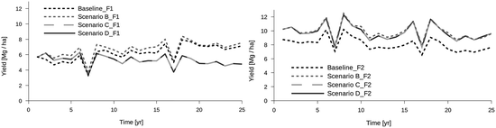

10.1 Modeling Approaches in the Uplands Program
10.1.1 Applications and Approaches
In the context of this chapter the term integrated modeling embraces: (a) the spatial interaction between higher and lower elevation positions in a watershed, linked by material flows of water and soil (Sect. 10.2), (b) up-scaling from the plot through the catchment (up to 50 km2 Sect. 10.2) and on to the regional or national scales (Sect. 10.3) (c) combinations of models covering different disciplines; mainly human-environment interactions (Sects. 10.5, 10.6, 10.7, and 10.8) and (d) the inclusion of innovative elements in the modeling cycle, particularly scenario building and calibration/validation (Sect. 10.4).
All case studies presented deal with land cover and land use change and their impacts on natural resources as this has been a main focus of the Uplands Program (Nikolic et al. 2008; Saint-Macary et al. 2010; Lippe et al. 2011) and many of its partners in the region (e.g., Ziegler et al. 2007; Lusiana et al. 2011; Pansak et al. 2010) and because assessing such effects in a spatially explicit manner requires modeling. In small mountainous catchments spatially distributed modeling approaches were chosen to represent erosion and nutrient translocation, often triggered by the introduction of mono-cropped continuous maize cultivation and other intensified cropping systems. For regional/national level decision support, GIS-coupled plot models were used that were fed with data from large-scale data bases, e.g., of soils and weather. Participatory methods were used mainly in order to cross-check and improve plausibility of model calibration, but also to adjust the modelers’ concepts and perceptions and to aid the identification and formulation of scenarios. Combining models of different scientific domains can serve different purposes, representing topics that are not covered by one model alone being probably the most common reason to integrate models. If two models overlap in their domains, useful comparisons can be made between the outputs of both, and may improve the level of understanding of the processes, the sensitivity to certain parameters or the trends observed.
10.1.2 Complexity
Models with higher predictive capacity, better accuracy or a more mechanistic representation of processes may be preferred over simpler ones, as long as sufficient data are available. In addition, more process-based complex models may be used to obtain simplified empiric transfer functions for certain processes, which can then be used on a wider scale or in places of low data density, e.g., landscape modeling. This approach is also useful for more comprehensive models, which are usually less specific. Where models from various disciplines are combined, the detailed representation of processes needs to be simplified, as complexity shifts from the process level to the interaction between the different modules. Figure 10.1 shows how the different modeling approaches introduced in this chapter are positioned regarding complexity at the human and environmental scales.
Fig. 10.1
Complexity of biophysical and human aspects represented by the various models discussed in this chapter. In the case of WaNuLCAS (a plot-level model), the complexity introduced by moving from the plot to the landscape scale is neglected
The Trenbath model (part of the Forest Agroforest, Low-value Landscape Or Wasteland? or FALLOW model), the Tropical Soil Productivity Calculator (TSPC), the Decision Support System for Agrotechnology Transfer (DSSAT), the Land Use Change Impact Assessment tool (LUCIA) and the Water Nutrient and Light Capture in Agroforestry Systems (WaNuLCAS), are the crop models, ordered by complexity. While the Trenbath model directly links an overall value of soil fertility to a certain crop production level, TSPC contains production functions that account for N, P and K supply following the Mitscherlich rule (stating that combinations of nutrient insufficiencies can become effective, rather than the most limiting single nutrient insufficiency constraining plant growth). Both TSPC and FALLOW build on empirical functions, with FALLOW accounting for the spatial distribution of land uses. The Integrated Participatory Social-Ecological Research approach (FALLOW-IPSER) includes user feedback loops used for participatory model calibration/validation (Sect. 10.4). DSSAT is a mechanistic plot level model extended to the landscape scale (Crop Production Decision Support System or CropDSS) in combination with a GIS database in which areas are represented in classes and do not interact. LUCIA represents hydrological and nutrient flows and their impact on plant growth and organic matter cycling in small catchments, while WaNuLCAS simulates hydrological and nutrient cycling on up to four plots, and additionally considers the competition among inter-planted species for light, water and nutrients.
On the decision-making side DSSAT/CropDSS, LUCIA and WaNuLCAS run on predefined crop rotations, that is, their land use and management options do not dynamically react to the biophysical model component. FALLOW and the Common Resources Multi-Agent System (CORMAS) build their decision-making rules on decision trees; the former aggregates at the landscape scale while the latter uses agents. Mathematical Programming-based Multi-Agent Systems (MP-MAS) uses mathematical programming to maximize the net income of farm households.
10.1.3 Overview
The contributions in this chapter are roughly ordered by the level of integration they represent, needed in each case to address a specific research question.
Section 10.2 presents LUCIA which was developed within the Uplands Program to integrate matter fluxes (lateral subsurface water flows, surface run-off, erosion, deposition and leaching) between upland and lowland areas in the landscape. LUCIA is applied here to assess the impact of soil conservation measures on maize yields in the Chieng Khoi watershed, Vietnam. While LUCIA cannot handle large watersheds due to the large amount of spatial interactions calculated on high resolution pixels, Sect. 10.3 expands the scenarios from the plot to the (sub-)national level and shows that the Crop System Model – Decision Support System for Agrotechnology Transfer (CSM-DSSAT) and its spatial extension, CropDSS, can be used to assess the impact of climate change on paddy rice production in Thailand.
Section 10.4 gives an example of qualitative data obtained from participatory interviews, decision trees and remote sensing in order to parameterize a semi-quantitative land use model. The study highlights the stepwise calibration and validation of the model building on stakeholder feedback, projecting socio-economic and biophysical trends over longer time periods and showing, for the case of Chieng Khoi, how increasing crop production levels masked a steady decline in inherent soil fertility. What appeared sustainable from an economic perspective owed to a combination of soil mining plus new varieties and increasing fertilizer application. Land use sustainability in a smallholder village in north-west Thailand is assessed in Sect. 10.5, based on predefined sustainability criteria. The CatchscapeFS approach is a heuristic decision model with an underlying decision tree structure, and, the approach presented in Sect. 10.4 – CatchscapeFS-CORMAS, can facilitate participatory approaches such as companion modeling, that is, the application of a model by farmers, with the guidance of a researcher.
The contribution in Sect. 10.7 leads back to the more academic level. Within the Uplands Program MP-MAS has been the most widely used instrument for assessing household (agent) decision-making, but is complex and data demanding and therefore less suitable for participatory approaches. Being a fully fledged economic and learning model, some applications of MP-MAS use empirical biophysical functions provided by the TSPC. In a case study of the Mae Sa watershed, Thailand, the model was applied to simulate agricultural intensification, with the diffusion of agricultural innovations as the main driver of land use change. The same model was applied for a case study in northern Vietnam (see Sect 10.6), building on a large dataset gathered through farm household surveys. The section describes the data basis required to calibrate and validate the MP-MAS model, explains the relevance and basis of derivation of the simulated scenarios, and analyzes model outputs with respect to potential recommendations to policymakers. A combination of the mechanistic biophysical and detailed agent-based models is presented in Sect. 10.8. LUCIA and MP-MAS were dynamically coupled to run detailed simulations of land use and landscape dynamics in Chieng Khoi, north-west Vietnam. The section describes the advantages of the coupling approach over combining either model to an empirical counterpart. Challenges along the way are discussed, technical in nature as well as in terms of the interpretation of complex outputs and the new insights created by the coupled model, with a focus on spatial variability.
10.2 Case Study 1: Linking Natural Resource Use and Environmental Functions in the Uplands and Lowlands: the Land Use Change Impact Assessment (LUCIA) Tool
10.2.1 Introduction
Devlopment of LUCIA has been ongoing at the University of Hohenheim since 2008, within the context of the Uplands Program.1
2 For a research framework that aimed to provide holistic approaches at the landscape scale, it appeared logical to design a tool capable of integrating a large but fragmented knowledge database on soil fertility, hydrology, plant growth and food security related processes.
The model was conceptualized to address questions specifically relevant to the Uplands Program’s research areas in Thailand and Vietnam, but at the same time in a generic way to allow its use in mountainous ecosystems of other regions. Given the general tendency for agricultural intensification and natural resource overuse in both research areas, the consequences of this on water and soil resources were the most burning issues to be investigated by the several sub-projects of the Program. One major issue in the area was continuous high input maize cultivation, as this has been replacing fallow-based upland rice and cassava systems for the last decade (Keil et al. 2008), leading to severe soil loss and the siltation of paddies (Schmitter et al. 2010), ponds and reservoirs. Nutrient cycles, erosion rates (Pansak et al. 2010), sediment loads, crop yields, efficacy and adoption of soil conservation measures (Saint-Macary et al. 2010) have been researched intensively in both Thailand and Vietnam. In Thailand, water is an important issue for irrigated peri-urban agriculture; and so the discharge from several sub-catchments under different land cover regimes, as well as lateral water flows in the soil, were measured during elaborate campaigns (Kahl et al. 2008). The impacts of de- and re-forestation, or agricultural innovations like litchi or rubber plantations in these catchments on the soil water balance, and also on carbon stocks, have also been subject to research projects.
LUCIA was conceptualized to allow a priori assessment of such changes and their consequences on the environment and on food security. A process-based representation of flows at high spatial and temporal resolution was seen as indispensable to account for spatial variability and patterns in the landscape. At the same time, different landscape aspects needed to be designed-in and linked together to give a holistic picture of the relevant processes involved in mountainous landscapes (Fig. 10.2).
Fig. 10.2
Landscape scale flows represented in the LUCIA model; water flows in Mae SaNoi, Thailand (left-hand side) and erosion in Ban Tat watershed, Vietnam (right-hand side)
In this part of the chapter, the capabilities and limitations of LUCIA as a standalone model are highlighted. The model is suitable for identifying and tracing back cause-effect relationships in predefined scenarios. Land cover and land use types are defined before the start of a simulation, so that the dynamic adaptation of land use or management practices as a reaction to changes in natural resource availability can be seen. Later on in this chapter (Sect. 10.8), this approach, as well as the standalone version of the Mathematical Programming-based Multi-Agent Systems (MP-MAS) model (with contributions in Sects 10.7 and 10.6) will be compared to a LUCIA and MP-MAS coupled-model system. By comparison, the advantages of coupling the models, but also the use of the biophysical standalone model, which facilitates identification of the effects of land use and management change under predefined scenarios, will be highlighted.
10.2.2 Scope and Description of the Model
LUCIA simulates the landscape-scale effects of changes in environmental conditions, caused by farmers’ land use and management strategies or climate change, on the availability of and changes to ecosystem services. Applications include water provision, soil organic matter accumulation or decomposition, soil fertility and nutrient cycles, soil and biomass capacity as carbon sink or the production of food – depending on the spatial distribution of land uses in a catchment, crop rotations, the different cropping, burning or plowing techniques used, and fertilizer/manure inputs, to mention just a few (Fig. 10.3).
Fig. 10.3
Overview of modules and applications of the LUCIA model
The model focuses on representing spatial patterns and the variability of resources in the landscape of small mountainous catchments.
10.2.3 Model Structure and Database
LUCIA is written in the PCRaster modeling language (van Deursen 1995), which builds on the Geographic Resources Analysis Support System (GRASS) mapcalc algorithms (Shapiro and Westervelt 1992), and combines GIS functions with a simple high level modeling language. Parameters are overlaid and calculated on a grid basis. Pixel size and time-steps are user defined, and in contrast to its predecessor mapcalc, PCRaster is optimized for dynamic modeling. The modeling language also contains specialized routing algorithms to simulate matter flows between pixels.
Spatial PCRaster models like LUCIA combine the landscape-scale representation of soil and vegetation classes in a map format, with parameters assigned to each of these classes. During model initialization, parameters and maps are associated using look-up tables; for example, the same value for the parameter subsoil clay content is assigned to all related soil type pixels in the soil map. During the following time-steps, each parameter is updated for each pixel based on the specific model algorithms. Temporal data series such as weather data are read from time series tables at every time step and are assigned to the respective pixels. LUCIA requires soil, land cover and topographic (Digital Elevation Model (DEM)) maps, as well as daily weather data such as rainfall, air and soil temperature, solar radiation and reference evapotranspiration rates (ET0) (for a full description, we refer to Marohn and Cadisch 2011). Soil and plant parameters required for model initialization are grouped according to the modules described in the following subsections.
10.2.3.1 Soil
Soil information represented in the LUCIA landscape is read from spatial soil maps in a specific PCRaster-grid format. For each pixel, a specific soil is composed of two horizons – top- and sub-soil, which have user-defined physical and chemical properties. Within the physical category fall horizon thickness, bulk density and texture, among others. Based on these parameters, plus soil organic matter content, soil hydraulic properties (pore volume, field capacity and hydraulic conductivity, among others) are derived based on the empiric pedo transfer functions developed by Saxton and Rawls (2006). Soil chemical properties determine plant nutrient supply and include total and available nitrogen, phosphorus and potassium.
10.2.3.2 Water Balance, Erosion and Deposition
Water enters the system in the form of rainfall, a part of which is intercepted and evaporated from the plant canopy (Fig. 10.4). System losses occur as evapotranspiration, as drainage below the soil profile and as stream outflows from the watershed. Topsoils and subsoils store water according to their pore volume and pore size distribution, and rain water that has passed through the canopy (throughfall) infiltrates the topsoil or, bypassing the soil matrix, goes directly into the subsoil. The amount of infiltration depends on the rainfall intensity, as well as the level of saturation and hydraulic conductivity of the topsoil. If the topsoil is saturated, overflow occurs, and if rain intensity exceeds conductivity (both are expressed in volume of water per time unit), surface runoff occurs (see Semmens et al. 2008 for the infiltration concept used in LUCIA). Both processes then lead to soil erosion. Infiltrated water can be stored in the topsoil or move into the subsoil (percolation) once field capacity is exceeded and there is free pore space in the subsoil. The percolation rate depends on the minimum of top- and subsoil hydraulic conductivity. Capillary rise is the movement from the subsoil into the topsoil, as driven by the matric potential of the topsoil and groundwater depth. Bypass flow is water potentially infiltrating in due time, but limited by available space in the topsoil, which directly enters the subsoil through macropores and cracks. Transpiration is water uptake from both horizons (depending on the rooting depth of the plant stand) into vegetation based on plant demand and water stocks above the permanent wilting point. Evaporation from the topsoil into the atmosphere is driven by reference evapotranspiration. Lateral flows between pixels occur in both soil horizons, their magnitudes determined by source and receiving pixels, the available water above field capacity, the hydraulic conductivity of the emitting pixel and the hydraulic conductivity and pore space of the recipient pixel. The partitioning between (vertical) percolation and lateral flows is regulated by the slope. Lateral flows in the soil, as well as surface run-off, are distributed in the landscape along the local drain direction map, which is derived from the DEM via a slope map.
Fig. 10.4
Representation of water flows on and between pixels in the LUCIA model (Notes: water flows: 1 through-fall, 2 interception, 3 transpiration, 4 infiltration, 5 bypass flow, 6 percolation, 7 loss, 8 plant uptake, 9 capillary rise, 10 evaporation, 11 runoff, 12 and 13 lateral flow)
Soil erosion is simulated following a process-based approach (Rose et al. 2007) as implemented in WaNuLCAS (van Noordwijk and Lusiana 1999). Soil on a specific pixel is detached by rain or entrained by sediments travelling through the pixel. Once the transport capacity of the run-off water is exceeded, particles in the water flow are deposited. Sediment loads are transported downslope along the local drain direction map. Erosion and deposition in the model dynamically alter topsoil depth, affecting water holding capacity and nutrient storage in the soil profile.
10.2.3.3 Plants
Vegetation types in the landscape are read from land cover maps. At the pixel scale, vegetation characteristics are calculated at the stand level, not accounting for individual plants. Biomass growth in LUCIA follows the WOFOST concept, as implemented in the Crop Growth Monitoring System (Supit 2003). Potential growth rates are thereby calculated first, as determined by photo-synthetically active solar radiation and plant-specific assimilation capacity. Actual growth rates are then derived by successively introducing water and nutrient constraints, which are determined by the actual soil water and nutrient contents, and the rooting depth.
Having accounted for respiration, net assimilates are converted into biomass. Morphological characteristics of the plant stand are then mainly driven by air temperature. Within a species-specific range, temperature sums are accumulated, which then determine the phenological development stages, from germination through flowering to maturity. Thus, for annual plants, higher temperatures throughout a growing season lead to accelerated maturation and shorter vegetation periods. Phenological development steers important physiological functions in the plant organism, such as the partitioning of assimilates between plant parts (leaves, stems, fruits and roots), the N, P and K demand of these same parts, the maximum assimilation capacity and the specific leaf area (SLA; a measure of leaf thickness). Values for these factors vary throughout the development stages of the plant and are thus indirectly temperature driven.
Once leaf biomass has been formed according to the above-mentioned partitioning rules, it is converted into leaf area index (LAI) by multiplication with SLA. LAI expresses leaf area relative to ground area and thus determines the capacity of the plant to absorb sunlight.
LUCIA can simulate both annual and perennial plants. The biomass and LAI of perennial plants, which are present before the start of a simulation, such as old growth forest, can be initialized using allometric or other empiric equations.
Plant litter in the form of leaves is shed once a plant ages, experiences severe drought stress or shades itself out once the canopy becomes too dense (i.e., above a threshold of LAI). In addition, plant necromass can remain in the field after harvest or slashing and burning; this includes above-ground as well as root litter. While the latter remains in the respective horizons, the former can be incorporated into the soil when plowing takes place.
10.2.3.4 Soil Organic Matter
Carbon and macro-nutrients circulate between plant and soil, and turnover rates are determined by soil organic matter dynamics (Fig. 10.5). Above ground and root litter are subdivided into a metabolic and a structural fraction, which differ in their lignin: N and C:N ratios, and decompose at different rates. When these pools are initialized in the model, they are associated with the present vegetation, not genetic soil units.
Fig. 10.5
Representation of soil organic matter (SOM) and C, N, P and K flows in the LUCIA model: 1 plant uptake, 2 leaching into subsoil (a) and neighboring pixels (b), 3 fertilizer/manure inputs, 4 erosion. Surf Surface, Lit Litter, metab metabolic, struc structural
Litter fractions are converted into soil organic matter (SOM) over time. As an analogy for litter, SOM fractions are characterized by distinct C:N ratios and decomposition rates, representing the role of substrate degradability in microbial decomposition processes. The entire system is carbon and thus energy-driven and energy-limited, while the N needed for microbial processes can be drawn from the organic substrate, or from the soil mineral pool if the substrate has a wide C:N ratio. Once the latter happens, soil mineral N is immobilized and temporally not available for plants. SOM fractions are called active, slow and passive, with approximate turnover times of 1.5, 25 and 1,000 years respectively. Decomposition rates, litter and SOM pools and flows are defined following the CENTURY approach (Parton et al. 1987). According to this concept, matter can be converted – decomposed or stabilized – between the three SOM pools except from the passive to the slow pool. Each conversion occurs at the expense of respiration energy and releases N and P if in excess of the recipient C:N or C:P ratio. The mineral N released during SOM decomposition is available to plants, while a user-defined share of released P is adsorbed to clay minerals or sesquioxides, depending on the soil type.
10.2.3.5 Land Use and Management
Farmers have several options to influence soil fertility and plant growth rates, including plowing and burning as well as fertilizer and manure application. The timing of each of these operations is user-defined in the model for each land cover, as is planting time.
To define fertilizer use, fertilizer types (N, P and K concentrations), amounts and application dates need to be defined. N and K are immediately plant available, while fertilizer P is distributed to the labile and stable P pools in the soil, which are in equilibrium. Manure or organic residue additions enter the litter pathway, so that carbon and lignin contents need to be additionally specified. Burning includes the option of collecting firewood beforehand and of defining the intensity of the fire.
In general, the standalone version allows one to implement land use change scenarios, but these have to be defined beforehand for the entire simulation. This allows for scenario testing and reverse modeling where land cover types are known. At the current stage of model development (v 1.2), LUCIA cannot dynamically adapt land use/land cover to changes in the biophysical environment, e.g., automatically adjusting crop rotation in line with soil fertility. Also, economic incentives or constraints are not yet part of the model.
10.2.4 Capabilities and Application
10.2.4.1 Applications and User Groups
LUCIA integrates different processes related to soils, water and plants, thus allowing a user to assess the benefits and trade-offs of land use change and management activities. These processes are represented in a spatially explicit way, so that the effects of positioning of each land use and activity in the catchment are taken into account and can be considered when designing management strategies. Applications of the model encompass the decline and recovery of soil fertility, changes in the water balance, surface run-off, erosion and sedimentation processes, yield levels, as well as food security, biomass and carbon stocks. Scenarios can represent the consequences of local farmers’ short-term management decisions (such as fertilization, plowing or burning), land use and land cover changes, or longer term changes such as in climate.
The current user groups targeted are researchers, graduate and post-graduate students, as well as staff at land development agencies. For M.Sc. level lectures, a graphical user interface (GUI) has been developed to facilitate data entry and plausibility tests, and to provide relevant outputs.
10.2.4.2 Case Study
The purpose of the LUCIA standalone simulation presented here, as well as of the coupled model system (see Sect. 10.8) was to assess the potential impact of low-cost soil conservation methods on maize cultivation in upland areas, across a 30 km2 catchment called Chieng Khoi in Son La province, an area which represents the ongoing trend toward intensified maize-based agriculture in parts of north-west Vietnam (Keil et al. 2008; Chap. 7 of this book). The combination of heavy rain and mostly steep terrain makes soils highly susceptible to erosion once permanent vegetation cover is removed. With increasing population in the area and stronger market integration, fallow periods have shortened or even disappeared, leading to severe soil degradation (Wezel et al. 2002).
Before the plant canopy fully covers the soil, slopes are at their most vulnerable to soil erosion and annual soil loss, with up to 40 Mg per hectare losses reported in the region under maize and cassava cultivation (Tuan, personal communication; Dung et al. 2008), which implies a loss of soil organic matter and the depletion of nutrients from the soil.
Average crop yields were calibrated using a household survey of 490 farms (Quang 2010) and validated based on field data by Schmitter et al. (2010), Boll (2009) and Rathjen (2010) for paddy rice, maize and cassava respectively.
Mineral fertilizers and high-yielding varieties can only partly compensate for the decline in soil fertility caused by soil erosion (Lippe et al. 2011), and further, loss of the topsoil causes a reduction in water holding capacity and siltation of lowland soils and reservoirs (Clemens et al. 2010; Schmitter et al. 2010). Farmers in the area are well aware of the ongoing land deterioration problems, but the adoption rate for soil conservation techniques is low, as soil conservation measures are either not known or considered unprofitable (Saint-Macary et al. 2010; Chap. 7).
10.2.4.3 Parameterization, Calibration and Validation of the Model
Pixel size in the Chieng Khoi model was set at 25 by 25 m, which corresponds to the size of an average smallholder plot. Maize fields in Chieng Khoi are slashed and burned between November and March; fields are plowed at the start of the wet season (April to October) and maize is sown in May. The study site was selected as, in addition to Uplands Program research, field experiments carried out by another project related to the University of Hohenheim were being carried out in the area, studying the farmers’ current practices in comparison to low-cost maize cultivation in which maize fields were not being burned nor tilled but intercropped with legumes (e.g., Arachis pintoi).
We based our model scenarios on this experiment, comparing farmers’ practices as a baseline scenario, as compared to the three alternative scenarios, which included additional management options as defined in Table 10.1 and over a 25 year period. Under these scenarios, we tested the introduction of different soil conservation options in the maize fields, but not for other crops.
Table 10.1
Scenarios tested for plots under maize cultivation
Scenario | Management options | |||
|---|---|---|---|---|
Burning | Tillage | Cover crop | Explanation | |
Baseline: current practice | Yes | Yes | No | Fallow vegetation or crop residues are slashed and burned in the dry season prior to plowing and sowing |
B: Zero tillage without cover crop | No | No | No | Fallow vegetation is not burned but mulched; maize is planted in untilled soil |
C: Zero tillage with cover crop | No | No | Yes | Same as (B), but a perennial legume is inter-planted with maize to reduce erosion; suppress weeds and fix atmospheric nitrogen |
D: Cover crop plowed under | No | Yes | Yes | Same as (C), but the cover crop is plowed into the soil to improve soil fertility and ease planting |
For each scenario, only one management regime was possible across all maize plots. Three fertilizer levels were implemented, namely zero fertilizer, farmers’ practice (75/50/75 kg elemental N/P/K per hectare) and levels recommended by the fertilizer manufacturer (double the farmers’ practice). Fertilizer levels per pixel were not varied between scenarios and years, as the objective of the scenario building exercise was to compare both model approaches rather than plot-specific fertilizer levels. Legumes were implemented as soil cover and competition with the crop for nutrients, as well as biological N fixation were not modeled.
The objective of this experiment was to assess (a) whether soil conservation measures under maize were able to directly reduce soil degradation and indirectly reduce it under other land uses on lower slope positions, and if so (b) how far yield levels would be positively affected by soil conservation measures in the long run.
10.2.4.4 Simulation Results
Firstly, it was found that soil conservation effectively reduced erosion. After the first year, soil conservation on maize plots under no-tillage (Scenario B) resulted in 0–7.3 Mg ha−1 less sediment loads per pixel as compared to the Baseline, while the legume scenarios C and D achieved between 0 and 18.8 Mg ha−1 less sediment loads (Fig. 10.6 left). Land uses other than maize showed only minor differences between scenarios. After 25 years, reduced sediment loads on maize plots reached up to 365 Mg ha−1 for Scenario B and 1,680 Mg ha−1 for Scenario C and Scenario D. The most substantial reduction was found in the lowland areas, which receive sediment from the entire catchment. Here, cumulative reduction ranged from 0 to 780 Mg ha−1 for Scenario B and from 0 to 2,150 Mg ha−1 for Scenarios C and D. These figures may appear high, because LUCIA does not distinguish erosion that originates on a pixel and re-entrained sediments from previous time steps. To disentangle these effects, we analyzed topsoil depth after 25 years using the same procedures. On a few of the pixels (~20 in the entire catchment), topsoil thickness was slightly greater in the baseline as compared to Scenario B and Scenarios C and D. In all other cases, topsoil was up to 5.3 cm thicker under Scenario B and up to 20 cm under Scenarios C and D, as compared to the Baseline. Separating these effects between maize and other land covers showed that other land uses were hardly affected, revealing that top soil loss affected mainly the source cells and that sediments travelled through the lowlands, but did not cause a major entrainment of soils under other land cover types.
Fig. 10.6
Difference in sediment loads baseline minus scenario D after year 1 (left), and difference in topsoil depth scenario D minus Baseline after year 25 (right)
Thirdly, analyzing yields after 25 years showed that it was mainly maize that was affected by soil conservation measures, as expected (Fig. 10.6 right). Due to landscape-related factors, both maize-derived erosion rates and maize yields showed large spatial variability, as shown in Table 10.2.
Table 10.2
Descriptive statistics of yields on unfertilized (F0) maize pixels for the fifth year of simulation, and erosion across all maize pixels for the first year of simulation, baseline, (n = 3,665)
Descriptor | Maize yield F0, year 5 | Erosion, year 1 |
|---|---|---|
Mean [Mg ha−1] | 4.20 | 13.6 |
St.dev. [Mg ha−1] | 2.40 | 30.2 |
Coeff. Var. [%] | 57 | 222 |
Minimum [Mg ha−1] | 0.00 | 0.0 |
Maximum [Mg ha−1] | 13.65 | 748.2 |
Cut-off lowest 10% [Mg ha−1] | 0.07 | 1.7 |
Cut-off highest 10% [Mg ha−1] | 6.00 | 27.6 |
Clear differences in average maize yields appeared between fertilizer levels, regardless of the soil conservation measures used. Yields under F0 dropped quickly from about 3 Mg ha−1 in the first year to about 0.3 Mg ha−1 in the second and then less than 0.1 Mg ha−1 in the following years (data not shown). Under farmers’ practice continuous fertilizer inputs (F1 treatment in Fig. 10.7, left chart) average maize yields started around 6 Mg ha−1 and then increased up to 7 Mg ha−1 under the baseline and no tillage scenarios, while yields of maize combined with legumes slightly decreased and dropped below the baseline in year 8. As nutrient competition between crop and legume was not modeled, this might have been caused by indirect nutrient insufficiency due to water stress in the crop (caused by the higher water demand of crop plus legume). Yields under high fertilizer input (F2 treatment; Fig. 10.7, right chart) came close to potential yields during years without water stress. Under soil conservation and high fertilizer inputs, yields remained clearly above the baseline at all times; however, during years of extreme weather (e.g., 7 and 17) the difference in yields between legume and non-legume treatments shrunk.

Fig. 10.7
Average maize yields at farmers’ practice (left) and high fertilizer levels (right) under all scenarios over the 25 years of simulation
Significant effects of plowing between the two legume treatments were not observed in the simulations.
10.2.5 Discussion and Outlook
At the plot level, the magnitude of soil eroded from maize plots (Table 10.2) was in the range of that found in the reference experiments carried out on similar slopes and soils in Chieng Khoi (Tuan, personal communication). Simulated soil conservation measures on maize plots were effective at reducing soil erosion on these plots and also on other plots downstream, although even erosion under soil conservation was at times considerable. Still, reduced erosion rates had a positive effect on maize yields in the first years after implementation of the measures.
After 8 years, yields under the legume scenarios (C and D) dropped below those under no tillage (B) and even those of the baseline (A). In this case, the initially higher nutrient export of C and D through maize harvest could have led to soil mining, but after a further number of lower maize yields under C and D, this tendency should have been reversed again (which was not the case). Two potential explanations can be given at this stage: (a) the higher water demand under crop plus legume as compared to a single crop (effects of weather in years 7 and 17 point to water stress), and (b) the effects of not burning on the availability of nutrients to plants.
While yields under scenarios A and B were above those of the legume treatments C and D, higher nutrient export for the maize harvest could have been the cause of the yield decline. However, this tendency would have reversed after several years of lower maize yields under A and B. The fact that the high fertilizer scenarios did not show the same trend supports this assumption.
At the landscape level, the effects of soil conservation measures on maize were limited when looking at sediment loads leaving the entire catchment. Although absolute quantities of eroded soil at the catchment outflow differed clearly between scenarios, these differences remained small in relative terms (data not shown), due to the fact that the large areas under forest and tree plantations, those contributing little to erosion, remained unchanged between scenarios. Seemingly larger erosion reduction effects in paddies, as compared to maize plots, stemmed from the fact that the model simulated sediment loads and thus did not distinguish between eroded soil originating from a pixel and such passing through a pixel (except for pixels without an inflow, e.g., next to a ridge). As sediment from the entire catchment passed the lowland and outflow cells, total amounts were always higher than in the upland source cells.
The LUCIA standalone model captured the spatial variability in erosion and crop yields observed in the field (Lippe et al. 2011). The high temporal and spatial resolution of the model allowed us to identify erosion hotspots (in terms of reduced topsoil thickness), distribution of sediment loads and patterns of soil fertility (e.g., high fertility along previously forested footslopes, outputs not shown) and their development over time. The unchanged land cover and management practices over 25 years, even though not a necessarily realistic scenario, facilitated the tracing back of causal relationships between variables.
In a coupled model with dynamic land use (Sect. 10.8), the effects observed here could not be expected to appear to the same degree, because agents facing waning yields would resort to different land uses or fertilizer levels. Given that soil conservation measures do make a difference regarding erosion, a dynamic decision-making model would need to allow farmer decisions to keep track of these factors separately for each pixel.
In Chieng Khoi, after 10 years of intensive maize cropping, the trend of increasing yields is still ongoing despite obvious soil degradation, and the simulations shown here, and in Sect. 10.4, point in the right direction. On the other hand, farmers are aware of problems caused by maize monocropping and soil degradation, such as paddy and reservoir siltation, pest pressure and others, which have not been modeled here. Recently, farmers have been starting to expand fodder grass and cassava cultivation, which both reduce erosion, so in the future maize may be grown only on the less erodible plots. The future generation of models needs to account for such plot-specific characteristics.
Currently, LUCIA-Choice is being developed – a decision-making module, which can be coupled with LUCIA. LUCIA-Choice contains a decision algorithm based on household resources, crop preferences and plot quality. The latter includes top-soil carbon contents and other indicators of soil fertility, and it is up to the farmers (as parameterized by the user) how much importance they attribute to these factors. This will allow a reflection of farmers’ levels of local knowledge on plot-specific characteristics in terms of their land.
10.3 Case Study 2: Assessing the Impact of Rice Production in Thailand Under Climate Change Scenarios
10.3.1 Introduction
Mainland Southeast Asia covers six of the ten Association of Southeast Asian Nations (ASEAN) member states, namely Cambodia, Lao PDR, Malaysia, Myanmar, Thailand and Vietnam, and has an estimated population of 252 million (2010).3 Rice ecosystems cover a total area of 30.6 million ha, with respective country land areas being 2.7, 0.9, 0.7, 8.0, 11.0 and 7.4 million ha for the above, and these systems are very sensitive to changes in climatic, edaphic and socio-economic conditions. Decision making to maintain rice ecosystem productivity, as well as livelihoods, requires well-organized knowledge and information system tools to be in place. Models that integrate spatial information and crop/weather databases reflect such tools, as they facilitate better decision-making through collective efforts, and provide an efficient communications platform based on organized and standardized databases, structures and key processes for the relevant ecosystems, including agricultural systems, watershed and regional production systems. The purpose of this paper is to present an information technology tool, CropDSS, which is able to link the Crop System Model-Decision Support System for Agro-technology Transfer (CSM-DSSAT) tool (Jones et al. 2003) with spatial databases and climate change scenarios taken from the Atmospheric General Circulation Model (ECHAM4) (Roeckner et al. 1996) climate model. In a case study on rice production systems, we demonstrated the capability of CropDSS to assess the impacts of climate change and evaluate adaptation options.
10.3.1.1 CropDSS Framework
Figure 10.8 shows the data framework of the CropDSS tool, which includes the Spatial Database Management System (SDBMS), the ModelBase Management System (MBMS), the analysis module and the visualization module for map display (Jintrawet 2009). In addition, the CropDSS shell consists of a number of related software components, some of which are core software modules visible to users, while the rest are ‘hidden’ from the user. However, there is a connection between various components of the software system, and these software components allow the user to access the SDBMS database held by the system.
Fig. 10.8
CropDSS framework (Jintrawet 2009)
10.3.1.2 Minimum Data Set (MDS) for the CropDSS Tool
The CropDSS tool requires two kinds of minimum data sets (MDS) to be present in order to assess crop yields and evaluate production options under climate change scenarios at various administrative levels. These include spatial data sets within the Spatial Database Management System (SDBMS) and attribute data sets. These data sets have the smallest possible number of spatial units and attributes required for a practical assessment and evaluation.
The SDBMS stores the minimum spatial datasets in a shape file format, including administrative boundaries (ATHAxx.shp), cropping areas (Cxx.shp) and rice (as used in our paper), as well as a soil series map (SOILxx.shp) and a weather zone map for the ECHAM4 climate model (WSTAxx.shp), where xx is the administrative code of a given level, i.e., country, province etc. In the implementation, the four spatial data layers of a given administrative boundary are overlaid to create Simulation Mapping Units (SMU), each with a unique administrative code, land use code, soil series code and weather zone code. These spatial data layers must be prepared and overlaid using Geographic Information System (GIS) software.
The core attribute databases of the CropDSS tool include the soil attribute data sets (Vearasilp and Songsawat 1991), the genetic coefficients of rice varieties, and the measured or generated or climate model scenario weather data grids. The rice genetic coefficients data for this experiment came from DSSAT MDS, based on field experiments conducted in Thailand, while weather data was obtained from SEA START RC at Chulalongkorn University, also in Thailand. These data sets had a simple text file format so new data could be entered directly into the system (Hoogenboom et al. 2003).
10.3.1.3 CSM-DSSAT Model Coupling
CropDSS was developed under the loose coupling approach, the aim being to avoid redundant programming. The individual CSM-DSSAT model was coupled at the SMU level based on a vector file format and set forth in reference to uniform soil series and weather zone maps for selected administrative boundaries (Sui and Maggio 1999; Hartkamp et al. 1999).
By executing a batch file, CropDSS executes the CSM-DSSAT model for each SMU, one by one. After one simulation, a set of “DSSAT output files” is generated, and for an “output data translation module”, output variables, such as yield, evapotranspiration rates and crop water productivity, are written into a “summary.out output file”. Each line of the “summary.out output file” presents output variables for one simulation. This output file is then used to generate “GIS output maps”, such as yield, water and nitrogen maps. These maps can be visualized in CropDSS and saved in a shapefile format for future use.
10.3.2 The Case of Rice Production in Thailand
10.3.2.1 Current Rice Production in Thailand
From 1990 to 2010, Thailand’s (5–20 °N, 98–105 °E, 0–330 m.a.s.l.) rice production systems occupied in average 10.2 million ha of land across all regions of the country (AFSIS 2012). The soil types in these areas are predominantly sandy loam, according to the US Soil Taxonomy particle-size distribution limits, and the climate in the area during the study period was characterized by an average annual rainfall of 1,200 mm, distributed mostly in the period May to October. The average maximum temperature during this period was 33.2 C and the average minimum air temperature was 20 °C. In general, the growing season rainfall for rice begins in August and ends in November or early December. The national average rice yield ranges between 2.0 and 2.6 Mg ha−1, with provinces in the northeast and the southern regions producing lower than average and provinces in the central region producing higher than average yields.
10.3.2.2 Testing the Model with Historical Rice Production Data
To test the impacts of the IPCC A2 and B2 climate scenarios (IPCC SRES 2000) on rice production activities in Thailand, CropDSS was used to simulate rice yields under three production systems, using one planting date: August 12th, for main season rice and 25 day-old seedlings. The rice variety used in the model was the non-photoperiod sensitive RD7 variety (Department of Agriculture, Thailand). One application of urea chemical fertilizer at a rate of 62.5 kg ha−1 was added on the transplanting date and partial irrigation was applied during the early growth stages. A one-to-one line analysis of the simulated rice yields under the rain-fed/no nitrogen applications scenario, using recorded yields for the whole Kingdom of Thailand as provided by the Office of Agricultural Economics and averaged for the period 1980–1989, was applied. The model over-estimated average rice yields for the period by 20 %, with a D-statistic of −0.78 and a Root Mean Squared Error (RMSE) of 0.808 Mg ha−1, mostly in the northeast region.
10.3.2.3 Evaluating Adaptive Strategies for Rice Production
Adaptive rice production strategies under the A2 and B2 scenarios for the 2012–2019 period were evaluated using CropDSS. Under the rain-fed production systems used in Thailand, adding 0.060 Mg of urea fertilizer and 2 Mg ha−1of green manure crop residues raised rice yields by 36% and 15% respectively, as compared to average yields during the 1980–1989 baseline years (Jintrawet and Chinvanno 2011) (Fig. 10.9). However, one needs to consider the fact that in practice, adding urea fertilizer may promote the release of N2O greenhouse gas into the atmosphere, which is likely to stimulate further global warming. In addition, adding green manure crop residues stimulates the release of CH4 into the atmosphere, as a product of microbial activity in the soil.
Fig. 10.9
Simulated rice yields (kg ha−1) in Thailand under the ECHAM4 A2 climate scenario, and with (a) averaged yields for the no-nitrogen input production strategy during the period 2010–19 (FP1), (b) a 2 Mg ha−1of green manure added production strategy, and (c) 0.06 Mg ha−1 of urea added as an adaptive strategy for rice production systems
10.3.3 CropDSS Tool Applications in Thailand
Pannangpetch et al. (2009) used CropDSS to assess the impacts of and evaluate options for climate change scenarios on cassava, sugarcane and maize production in Thailand, using the ECHAM4 A2 and B2 climate scenarios. The results reveal that increased CO2 concentrations and temperature had a small impact on sugarcane and maize production levels, but reduced cassava yields 43 % by the end of the twenty-first century, as compared to the baseline period of 1980–1989. Furthermore, yield variability over time, an important indicator of climate risk, was relatively high, with a mean annual variation of 14 %, 18 %, 34 % and 41 % for rice, sugarcane, cassava, and maize respectively. The authors also reported high spatial yield variability of 33 %, 23 %, 33 %, and 41 % for the same crops respectively, especially in the northeast region where rain-fed production systems dominate.
10.3.4 Challenges and Opportunities
The CropDSS tool evaluates and assesses the impact of climate change scenarios on rice crop production systems in Thailand; however, challenges and opportunities remain at various levels of the organizational and administrative systems in terms of the use of such a tool.
There are three key challenges to the implementation of CropDSS for assessing the impacts of climate change in ASEAN countries and evaluating adaptive options, namely: (1) institutional support is required for interdisciplinary teams to coordinate the data standards, data collection, storage and exchange activities required for this tool and the CSM-DSSAT models, in order to address a given issue like climate change, as presented in this section, (2) capacity building for junior scientists in key line agencies is needed to promote the creation of effective applications to address key issues relevant to their mandates and to stimulate livelihood developments, and (3) with pressure from global and local issues, it will be a challenge to secure funding for research and development teams through effective communications, especially with policy makers. The immediate implementation challenges and constraints faced by ASEAN states in preparing for climate change using the CropDSS model are the cost and time expended during data collection. An alternative approach is to use secondary and surrogate sources of data; however, when using this approach, care needs to be taken in structuring the spatial databases so as to ensure compatibility with the requirements of the tool.
Opportunities to widen the implementation of CropDSS across ASEAN member states are threefold, namely: (1) increasing awareness among the public and policy makers with respect to the potential impacts of climate change on agricultural systems and related businesses, (2) increasing the availability of technology, both in terms of hardware and software, to encourage the establishment of a regional training center for individuals and organizations, and (3) enhancing the willingness of scientific communities to collectively support interdisciplinary efforts, as well as innovative approaches such as networking platforms, by joining discussions at various levels within ASEAN states in order to deal with climate change.
Further, the tool may be adapted to other crop production systems in Thailand, and also in ASEAN member states with institutional support for data sets and the right technical staff.
10.3.5 Conclusions
Agricultural systems that involve green and sustainable development for better livelihoods are the objective of efforts to convert scientific understanding into predictive tools, those which allow logical decisions to be made in terms of better managing the limited resources available to ASEAN members. In this section, we have provided a framework for the use of CropDSS, using input data, simulation processes and outputs in order to support decision-making processes on a number of levels. CropDSS is an innovative and practical tool that simulates crop yields under various management scenarios by integrating CSM-DSSAT models with GIS databases. However, implementation of the tool requires some effort to overcome certain challenges, such as the need to establish a minimum number of data sets, as well as train local staff.
10.4 Case Study 3: Building on Qualitative Datasets to Simulate Land Use Change in Mountainous North-Western Vietnam
10.4.1 Introduction
Land use models are useful tools for assessing feedback mechanisms and causal relationships at the human-environment interface, following the premise that landscapes are social-ecological systems for which the scientific-technical perspectives provided by a model can support policy activities (Argent 2003).4 In contrast, participatory approaches are a methodological pathway aimed at reducing the epistemic uncertainty involved in environmental problems, and commonly result in qualitative outputs (Neef et al. 2006; Pahl-Wostl 2007). Despite the reported potential of integrating both tools into a single research approach, only a small number of studies have been carried out in the mountainous areas of Southeast Asia, such as by Becu et al. (2008). Consequently, this study draws on an integrated approach, combining participatory assessment tools and a land use change model in an iterative process aimed at unravelling the linkage between soil fertility degradation and land use change in the case study area of Chieng Khoi Commune, north-west Vietnam. It was hypothesized that (1) qualitative information derived from a participative environmental assessment approach could serve as an input to parameterize the soil fertility module of the Forest, Agroforest, Low-value Landscape Or Wasteland? (FALLOW) model (van Noordwijk 2002), and (2) the combination of local knowledge and model simulations would generate new insights into the local complexity of land use change.
10.4.2 Study Area
The study was conducted in the village of Ban Put in Chieng Khoi commune, which is located in Son La province in the north-west of Vietnam. The village encompasses a total area of 558 ha and has a population of 467 people of Black Thai ethnicity. The land use systems studied comprised secondary forest (375 ha), upland cropping dominated by maize, cassava and mango (77 ha) and lowland paddy fields (11 ha) (Chieng Khoi Commune 2007).
10.4.2.1 The Forest, Agroforest, Low-value Landscape or Wasteland? (FALLOW) Model
FALLOW is a spatially explicit land use and land cover change model with a yearly time-step (van Noordwijk et al. 2008). In this study, FALLOW version 1.0 was employed, having been encoded using the PCRaster Environmental Modeling software language (http://pcraster.geo.uu.nl/). The model used here assumed farmers to be the main agents of land cover and land use change, based on a multi-criteria analysis of: (1) plot attractiveness – to expand a land use type as a function of soil fertility, accessibility, attainable yield, and potential costs arising from transportation and land clearing, (2) the allocation of labor and land to available options of investment, and (3) the diminishing and increasingly marginal returns on soil fertility and land productivity. The annual simulation loop for FALLOW was built on the ‘Trenbath’ soil fertility approach (Trenbath 1989), under which soil fertility at the plot-level proportionally declines during cropping periods by a specific soil fertility depletion rate and increases during fallow periods with a characteristic half-recovery time. Fertilizer application affected soil fertility and yields by reducing the depletion rate, while crop yield was a function of a crop specific conversion factor and existing soil fertility levels at the plot-level. Overall crop productivity at the landscape level contributed to food security, together with revenues gained from other economic activities (such as forest resource utilization activities or tree plantations). The consequences of these landscape dynamics were assessed by output indicators, that is, annual land use and soil fertility maps (Suyamto et al. 2009).
10.4.2.2 Participative Focus Group Discussions
The employed participatory assessment approach was built on conceptual ideas drawn from Soft-System-Methodology by Checkland (2000) and Participatory Rural Appraisal by Chambers (1994). The assessment was carried out in two stages. Firstly, a reconnaissance survey was carried out drawing on field visits and semi-structured interviews with local stakeholders such as farmers, villagers and government officials, to obtain an overview of the study area. Secondly, focus group discussions were conducted with local stakeholders, to jointly analyze the determining factors leading to the upland cropping patterns to be found in Ban Put village. For this purpose, a set of model input parameters was chosen to guide the participative discussions, comprising endogenous variables related to farmers’ decisions on land use intensification, field management and its ecological consequences, and exogenous variables covering the distance to cropping fields, population growth and the influence of land use policies. Overall, 32 participants joined the focus group discussions – representing local administrative organizations, villagers and upland farmers. To reduce output bias, discussion groups were split into younger (18–40 years-old) and older (41–65 years-old) participants, as well as male and female groups.
10.4.2.3 Summary of Participative Discussion Findings
Participants described four historical time periods in the evolution of their upland cropping system, namely 1975–1988, 1988–1995, 1995–2000 and 2000–2008. Over this period, land tenure changed from cooperative to individual land use rights, and cropping areas expanded from foothills and moderate slopes to steep slopes and hilltop positions. This change in upland cropping was characterized by the abandonment of swidden agriculture and the adoption of continuous cropping systems with a shift from upland rice, traditional maize and cassava, to hybrid maize and cassava crop varieties. Participants defined an upland crop suitability system (maize and cassava, intercropping) based on eight soil classes which they combined with inherent soil fertility levels to describe the crop yield potentials of the existing upland cropping system (Table 10.3). From the participant’s point of view, a high soil fertility level represented a high crop yield potential, which corresponded with the Trenbath approach to link crop yields to soil fertility levels. Based on this view, farmers yielded assessments drawing on soil color units which were then converted to model soil fertility units using a linear, equidistant approach. Overall, soil degradation was described as the overarching problem constraining existing upland cropping systems. With the help of paper cards and A0 paper sheets, participants linked an identified set of causes with those consequences having a direct influence on soil fertility decline, these being: (1) increased fertilizer application rates we used to circumvent declining crop yields, (2) pest and disease pressure increased as a consequence of utilizing hybrid seed varieties, (3) soil erosion and the abandonment of fallow periods reduced plot water holding capacity, and (4) tillage by hoe and plow resulted in soil compaction.
Table 10.3
Farmers’ cropping preferences and the level of inherent soil fertility according to soil color – as revealed by focus group discussions and corresponding FALLOW model soil fertility units (Adapted from Lippe et al. 2011)
Local soil classification | Inherent soil fertility | Suitable cropping systema
| FALLOW soil fertility units | |||
|---|---|---|---|---|---|---|
Maize | Intercropb
| Cassava | Trees | |||
Black | Good | ++ | ++ | ++ | + | 15 |
Red-Black | Moderate | ++ | ++ | ++ | + | 12.5 |
Red | Moderate | ++ | ++ | + | 10 | |
Red-Clay | Moderate | ++ | ++ | + | 10 | |
Red-Sandy | Moderate | ++ | ++ | + | 10 | |
Yellow-Black | Moderate | ++ | ++ | ++ | 10 | |
Red-Yellow | Low | ++ | ++ | ++ | 7.5 | |
Yellow | Low | + | + | ++ | 5 | |
10.4.2.4 FALLOW Model Simulations
The FALLOW model was calibrated based on the qualitative outputs of the focus group discussions to simulate the period 1975–2008. Calibration was divided into two parts by preparing factor maps to guide the location of future change, including initial land cover, forest protection areas, inherent soil fertility and distance to roads, plus variables to either parameterize the Trenbath soil fertility (Table 10.4) or socio-economic modules, i.e., population growth and labor requirements (data not presented). Outputs of a flowchart prepared by the participants to visualize the input–output plot balance were drawn to fit the yield potential (Y
max
, Y
min
) of the employed cropping system. In the context of the Trenbath approach, soil fertility was employed by using a categorical depletion variable ( f
D
), where a value of 1 defined a complete soil fertility stock decrease by mineralization during one year of cropping (Suyamto et al. 2009). In this context, the employed stepwise increase of soil depletion depicted participants’ descriptions that the change from swiddening to hybrid cropping systems was closely associated with an intensification of management practices, such as soil tillage. Moreover, the stepwise increase in crop conversion efficiency (c) resembled the use of improved and hybrid seed varieties possessing a higher crop yield potential when compared to traditional ones.
Table 10.4
Input variables for the Trenbath soil fertility module used in the FALLOW model’s baseline scenario
Trenbath input variable | Unit | Time period | |||
|---|---|---|---|---|---|
1975–1988 | 1989–1995 | 1996–2000 | 2001–2008 | ||
Yield (Ymin;Ymax) | Mg ha−1
| 0.5–1.5 | 0.5–1.75 | 0.5–2.25 | 0.5-3.25 |
Depletion rate (fD) | Dimensionless | 0.35 | 0.4 | 0.45 | 0.5 |
Fallow period | Year | 3 | 3 | 0 | 0 |
Half recovery time | Year | 16.5 | 11 | 5.5 | 2.75 |
Crop conversion efficiency | Dimensionless | 0.3 | 0.35 | 0.4 | 0.45 |
Cropping period | Year | 3 | 5 | 5 | 10a
|
Fertilizer efficiency (Kfert) | Dimensionless | n/ab
| n/a | n/a | 0.25 |
Simulated land use change trajectories were evaluated by drawing on the multiple-resolution goodness-of-fit (GOF) procedure (Costanza 1989), and using land cover maps derived from a Système Pour l’Observation de la Terre (SPOT) satellite image taken in 1992 and a Linear Imaging Self-Scanning Sensor (LISS III) satellite image taken in 2007 (Thi et al. 2009). The GOF statistical technique is based on the measurement of pattern similarity between simulated and observed land use change, where one denotes a perfect model fit. The analysis revealed that FALLOW reflected the development of land use and land cover reasonably well, with a GOF value of 0.78. The increase in cropping area during the simulation period was made at the expense of fallow areas, resulting in a decline of inherent soil fertility from predominantly black into average red-yellow soil conditions (soil fertility value > 7.5). The combined use of maize hybrid varieties and fertilizers from 2000 onwards initially masked soil degradation, enhancing maize production to an annual average of 2–3.2 Mg ha−1 (Fig. 10.10). However, the application of fertilizer did not strongly influence inherent soil fertility development, as simulated soil fertility remained within red-yellow soil conditions. Here, model outputs and farmers’ descriptions followed similar trends, pointing towards the degradation of soil fertility as a commonly perceived problem for upland cropping systems.
Fig. 10.10
Simulated average annual crop yield and soil fertility development in Ban Put for the baseline scenario from 1975 to 2007; crop type (upland rice, maize) and variety (hybrid maize variety HY1 and HY2) change follows stakeholder descriptions; arrow indicates start of fertilizer use (Adapted from Lippe et al. (2011))
To test the impacts of the calibrated parameter setting, the model runtime was extended until 2018 to test the consequences of stakeholder-based suggestions on how to combat declining upland soil fertility levels. The year 2018 coincides with the assumed end of officially guaranteed land use rights for crop-based systems (the so-called ‘red book’ certificates), at which time the provincial government is expected to reallocate land use rights among villagers. Simulation outputs (Fig. 10.11) indicated that by 2018, soil fertility would have further declined, with most plots remaining at moderate to low fertility conditions (Fig. 10.11; red-yellow to yellow).
Fig. 10.11
Spatial soil fertility development of the scenario improved fertility by a level of 0.25 (ImpFert 0.25) between 2008 and 2018 (Adapted from Lippe et al. (2011))
10.4.3 Discussion and Conclusions
The focus group discussions revealed that land use history and evolution of crop management intensification correlated well with the findings of other studies in Yen Chau district (Clemens et al. 2010) and indeed Chap. 2 of this book. They confirmed topsoil color as being a major indicator of a soils’ crop suitability, as black soils are the most preferred soil types in Chieng Khoi commune due to their higher total N, C and CEC contents, when compared to red or yellow soils. This underscores the overall model calibration concept linking soil fertility and soil color, further supported by the FALLOW model approach of crop choice being relative to soil fertility classes (or predefined boundaries). Challenges with such an approach may arise in the choice of an adequate soil fertility calibration approach, due to interactions between soil fertility and crop management practices in the field. For example, it might questioned as to whether the employed calibration approach (Table 10.3) satisfactorily represented the stakeholder described land use evolution pattern; however, as stakeholders did not describe more drastic changes of soil fertility with yield changes, e.g., by pointing towards exponential developments, it was assumed that an equidistant calibration approach captured the local soil fertility evaluations adequately in this case. The model analysis further demonstrated that soil degradation would move towards critical red to yellow soil levels (Fig. 10.11) in 2018, with a higher vulnerability in relation to soil erosion (Clemens et al. 2010), a tendency also shown in the LUCIA approach (Sect. 10.2). Low current soil fertility levels also pose a challenge to potential soil conservation strategies, as the build-up of soil fertility will be slow once soil degradation has advanced (Wezel et al. 2002), as demonstrated in the model simulations. Here lies an apparent advantage of the FALLOW model, as it allows for the possibility of integrating different knowledge domains to produce simulations that may be relevant for local stakeholders and decision-makers. The low data input requirements when compared to data-demanding mechanistic model approaches allow the disclosure of meaningful insights into local soil degradation phenomena, those relevant for strategic planning. While absolute maize yields simulated with FALLOW may be less detailed when compared to the LUCIA simulations presented before (Sect. 10.2), the phenomenon of yield increase masking soil degradation is common to both approaches.
Overall, the presented study has an important message to convey at the community level. If resource managers resist changing current cropping practices, environmental degradation will adversely affect the livelihoods of farmers and will be increasingly difficult to reverse. Yet this problem has a much broader regional dimension, as the case study presented here is a typical example of the challenges currently faced across the north-western mountainous provinces of Vietnam. This study has shown that building on an iterative participatory approach to obtain input variables that are suitable for semi-quantitative modelling – as a methodological pathway to foster the implementation of sustainable upland cropping practices, has proven its usefulness in a data-poor environment.
10.5 Case Study 4: Agent-Based Modeling on the CORMAS Platform to Examine the Sustainability of Rain-Fed Farming Systems in Northern Thailand
10.5.1 Introduction to the Application
This study developed an integrated agent-based model called “CatchScapeFS”, which was applied to assess the sustainability of agriculture in the case study village of Bor Krai, located in Mae Hong Son province, as population growth and the intensive use of agricultural land had raised questions about the sustainability of this rain-fed farming system.5
To assess sustainability and extrapolate the area’s sustainability situation, the CatchScapeFS model was developed as a virtual farming system based on a multi-agent system (MAS) approach. Relying on a bottom-up approach, the model is suited to sustainability assessments on an individual farm basis. In addition, it captures the complexity of the system by including aspects related to the heterogeneity and interaction of the system elements, such as farm households, crops, plots and livestock (Potchanasin 2008).
The farm household decision-making process, which is the main part of the model, was modeled using behavioral heuristics in which the processes were presented as decision tree diagrams with behavioral rules and dynamic conditions. The heuristic approach was selected as an alternative to optimization, because it includes the qualitative aspects of farm household decision-making, such as behavior about subsistence, the fallowing of land and the performance of off-farm activities, which are difficult to apply in optimization models (Schreinemachers and Berger 2006; Becu et al. 2008). In addition, the approach captures bounded rationality, which is characteristic of the decision making of farm households with limited capability with regard to search costs in either the cognitive or financial form (Schreinemachers and Berger 2006). Furthermore, the approach is flexible enough to model agents’ environmental perceptions and their communications, which are important properties to model in terms of the social interactions among cognitive agents in the model. The approach is also flexible enough to involve stakeholders in the various stages of the modeling process, such as model development and validation, whereby decision-making processes can be presented in a decision tree diagram, which is more understandable for the non-modelers and; thus, enhances stakeholder discussion (Becu et al. 2008). This approach is also more flexible in terms of integrating the farm decision-making model with other models such as crop, water balance and hydrological models, which have a different temporal resolution (Becu et al. 2003).
10.5.2 Background and Study Objectives
The study presented here aimed to assess the sustainability of farming systems in Bor Krai village, Mae Hong Son province, by developing an integrated farming system model called CatchScapeFS. The case study area was selected as it is a critical mountainous area located in a National Conservation Forest in northern Thailand. In the study area, the villagers pursue subsistence farming and face increasing resource scarcity because of population growth and the limited availability of land, while increasing market opportunities have stimulated a more intensive use of agricultural land (Praneetvatakul and Sirijinda 2005; Chap. 1). These trends are challenging the sustainability of the system and could in the long run cause food insecurity and environmental problems such as land degradation.
An assessment of sustainability was performed through the use of sustainability indicators covering the economic, social and environmental domain (Praneetvatakul et al. 2001), and indicators included household incomes, net farm incomes, household capital, household savings, food security, top-soil erosion and the length of fallow periods. These represented outcome indicators of the simulations, which were run for a period of 15 years (2003–2017). The assessment started at the farm level, and based on a household’s performance in terms of the above indicators, each farm household was classified into one of three classes: Sustainable (S), Conditionally sustainable (C) and Non-sustainable (N) (Potchanasin 2008). The sustainability of farming systems at the village level was evaluated based on the number of farm households in each class, and the results of the area’s farming systems sustainability at the village level were presented using a Sustainability Index (SI) for each indicator and a Performance Index (PI) for all the indicators. These indices were presented as percentages, with higher or increasing percentages indicating a greater level of sustainability.
10.5.3 Data
Both primary and secondary data were used in this study. The first primary data came from a 2004 survey carried out by Praneetvatakul and Sirijinda (2005), who used structured questionnaires on 32 randomly selected farm households out of 56 in Bor Krai village. The second primary data included field surveys conducted by the researcher in 2005 and 2006. For the survey in 2005, the data consisted of quantitative and qualitative data about the behavioral and decision-making aspects of farm households and other stakeholders. Additional data were collected, such as village land use, the amount of water resource release from natural springs and Geographic Information System (GIS) data. The 2006 survey provided data for the model validation and the testing of the hypotheses on farm household behavior and decision-making processes, based on the farm household group sessions. Diagrams on significant behavior and decision-making processes were presented and used as a tool for information elicitation and confirmation of the diagrams, which were hypothetically predetermined from all the available information and data from the surveys. In addition, the study used secondary data from various data sources to complement the primary data for the analysis.
10.5.4 The CatchScapeFS Model
The integrated CatchScapeFS model was based on the CatchScape3 model (Becu et al. 2003), which was developed on the CORMAS platform using the SmallTalk programming language. The model had two principle components: a biophysical and a socio-economic component. The biophysical component consisted of a hydrological model, a crop model, a water balance model and a soil erosion model, which for this study were all embedded in the landscape model (Fig 10.12). Each sub-model can be presented as follows.
Fig. 10.12
The study area represented through the CatchScapeFS model (Adapted from Potchanasin 2008)
Landscape model – the landscape of the study area, Bor Krai village, was divided into a spatial grid of cells representing plots of one rai (0.16 ha). The total number of plots was 8,855 rai or grid cells, and each cell contained a set of attributes such as land use, soil types, slope gradient, fertility and fallow periods, which were required by the biophysical modules. Some local spatial attributes were generated from a GIS analysis of consistent maps of the study area, including land use, land type6 and slope gradient as attributes (Fig. 10.12).
Water balance model – the model was structured to quantify the amount of water output released from each plot as run-off and deep drainage, which was then used in the hydrological model. The water balance model was based on the concept of double reservoirs, following Perez et al. (2002), which included a root zone and soil layer reservoir. The soil layer reservoir was supplied by water inputs as infiltration and irrigation, and released water outputs as deep drainage and evapotranspiration. The soil layer reservoir covered the root zone reservoir which could increase depending on root growth at each time-step, while the soil layer reservoir was kept constant.
Hydrological model – the model was linked to the water balance and crop model at the grid cell level. The amount of water flowing as run-off and deep drainage from the water balance model was used in the hydrological model, representing the propagation of such water through the catchment’s hydrographic network, represented by an arc-node structure (Becu 2005). Water dynamics were implemented as a semi-distributed hydrological model, which was an aggregation of water at the intermediate level of the spatial scale, called the supply area, which was distributed through an arc-node structure similar to water inputs and outputs, and was propagated along upstream and downstream features.
Crop model – this model was based on the CropWat model (Smith 1992) developed by the Food and Agricultural Organization of the United Nations (FAO). Actual yields can be estimated in the model using the methodology proposed by Doorenbos and Kassam (1979), in which the actual yield is linearly related to the evapotranspiration deficit, which is determined by the ratio between cumulative values of actual evapotranspiration (ETA) and maximum evapotranspiration (ETM) during the growing period.
Soil erosion model – this model was based on the Universal Soil Loss Equation model (USLE model) proposed by Wischmeier and Smith (1978). In this model, at each year in the simulation, soil loss in the study area was quantified subject to five significant factors, namely rainfall erosivity, soil erodibility, slope length and slope gradient, crop management and conservation practices.
For the socio-economic component, the CatchScapeFS model included farm household agents and other social elements based on a farming systems approach (Potchanasin 2008). To generate farm agents, cluster analysis and qualitative analysis were applied, together with Monte Carlo techniques (Schreinemachers 2006; Potchanasin 2008). These analyses allowed a population of 60 agents to be created, which was statistically consistent with the 30 sample households from the 2004 survey. The average amount of resources allocated to the agents, such as the number of persons per household, land holding, heads of livestock, cash, debt and stored rice, was not significantly different from the average for the farm households in the survey, which indicates a close statistical fit between the agent population and the sample population.
Each simulation time step corresponded to a 10 day time interval, and the model simulated six dynamic phases, which were: biophysical dynamics, farm household activities, socio-economic dynamics, information exchange and result arrangements. Each phase contained model processes that were performed in sequence; for instance, the farm household activities phase contained farm agent decision processes, such as the selection of which crops to grow. Farm household activities consisted of eight sub-phases: knowledge base updating, household resource updating, cropping activities, household activities, harvesting, the selling of farm products, financial activities and livestock activities. At each time step, farm agents executed all the processes, some of which required agents to interact with other agents or objects; for instance, asking for price information and crop alternatives, asking for loans and changing crop properties on their plots. In the sub-phase of the cropping activities, farm agents examined their own plots; whether they were ready to be cropped – such as having already been left fallow, or used to produce the main crop from the previous year (to keep cropping patterns in line with reality). Then, if plot properties reached the test conditions, the farm agent interacted with the abstract object, a form of behavior used to select crops using their own strategies. For example, if an agent was risk-seeking, it would execute its own risky strategy to select the crop, whereby a crop which could generate a higher level of income would be preferable to a crop grown with government support or for subsistence purposes. After that, the agent tested or considered the other resources available and the subsistence conditions, such as cash, labor and consumption expectations, and if satisfied, the selected crop would be planted. To plant the selected crop, the agent interacted with his plot object and the plot would change its crop attribute property from fallow to prepared plot and then to selected crop. In addition, after the crop had been harvested, information such as the yield, price and income level would be stored in the farm agent knowledge base, then used to influence the agent’s decision-making in the next cropping year. All methods in this model were verified in order to test and examine that the model would proceed in the correct way. After parameterization and calibration, model validation was conducted using social validation (the diagram elicitation approach) and statistical data comparison validation.
10.5.5 Main Results
The study results showed that the farming system in the study area is not sustainable. Lack of sustainability can be indicated by a declining Performance Index (PI) and also a negative trend in the Sustainability Index (SI) (Fig. 10.13).
Fig. 10.13
Performance Index (PI) for farming systems’ level of sustainability in the study area (Adapted from Potchanasin 2008)
For the household income and net farm income indicators, sustainability decreased (Fig. 10.14), a decline due to a reduced growth in income levels (both farm and off-farm income) when compared to the growth rate of private expenditures, which induced a negative net income to develop. This increase in household private expenditures occurred due to population growth and inflation; thus requiring more income to recover. This scenario affected other indicators, as seen through a decrease in the sustainability level in terms of fallow periods, which resulted from an increased pressure to meet subsistence consumption needs, as more land was needed to produce enough rice to feed the growing population. This meant that existing agricultural land was used more intensively through a shortening of the fallow periods, while encroachment into the forest in search of new land increased, which in reality is not legally allowed. This situation was harmful to soil fertility and the recovery of land, leading to land degradation in the long run.
Fig. 10.14
Average of the key information, plus the Sustainability Index (SI) for each indicator (Adapted from Potchanasin 2008)
The lack of sustainability could also be noticed through a worsening of the household savings and capital indicator situation, meaning that the situation regarding household capital became less sustainable over time; the result of a decreased production of farm products (farm capital goods). This situation subsequently compromised the ability of households to recover once faced with stress events.
Regarding food security, sustainability slightly decreased; however, the results show a strong variation at the beginning of the first 4 years, which was influenced by an unfavorable distribution of rainfall and a poor availability of suitable land during some of the production years. This situation induced a lag in the production decisions, or led to wrong decisions being made by the farm agents, corresponding to biophysical conditions that were uncertain and varied from year to year. In the case of topsoil erosion, the results show that the sustainability situation became worse, and this corresponded to the amount of soil erosion produced by farm households per area unit. In addition, erosion caused by rain had a relatively high impact when compared to other factors, especially during rains, in terms of the clearing or land preparation period, when vegetation cover was sparse.
Regarding all the Sustainability Indices, their development over the simulation period showed that the various aspects of sustainability could be ranked and used to determine issues which needed to be improved. Food security was considered as the most unsustainable issue, as it contributed significantly to the area’s lack of sustainability (Fig. 10.15). This can be denoted by highest negative trend comparing among other indices’ trend. Household savings were the second most important issue, followed by the level of household capital, topsoil erosion, household incomes, fallow periods and net farm incomes.
Fig. 10.15
Trend comparison among sustainability Indices of all indicators (Adapted from Potchanasin 2008)
10.5.6 Conclusion
The study presented here used an integrated model application called CatchScapeFS, which was based on an MAS approach. The study showed that the application was able to evaluate and project the sustainability of farming systems in the study area. The model showed its ability to present the ex-ante results, as emergence of the system generating through the systems’ complexity property whereby the classic assumption, ceteris paribus, was neglected. Furthermore, qualitative and quantitative variables could be included together in the model, which is difficult or impossible to achieve in conventional models. As a consequence, a model relying on the MAS approach may be used to address research questions over a wider or different perspective, in which the heterogeneity, interaction and dynamics of the system elements need to be accounted for. However, the main purpose of the model was not to replace conventional approaches, but rather to act as a complement; to enhance a study’s ability to answer research questions over a wider range. Also, this study shows that modeling using a behavioral, heuristic approach in general has advantages, not only in terms of mimicking real-world situations, but also in terms of integrating other models, those which use a different temporal resolution. Also, the activity processes in the model can be presented in decision-tree diagrams, which make the model more flexible when it comes to communicating with non-programmers and stakeholders, those who participated in the model’s development.
The study results show that current agricultural practices in the study area are not following a sustainable development path, and so, to improve the situation, we propose the ranking of sustainability issues, something which should also take account of policy developments.
10.6 Case Study 5: The Adoption of Soil Conservation Practices in Northern Vietnam and Policy Recommendations
10.6.1 Introduction
Previous research has shown that farmers in north-western Vietnam know about soil erosion and soil conservation, but still do not apply preventive practices (Saint-Macary et al. 2010), and without soil conservation measures in place, large amounts of soil are eroded from sloping land (Schmitter et al. 2010; Valentin et al. 2008; Wezel et al. 2002).7 The objective of this study was to simulate the adoption of soil conservation practices, and to assess the impact of a payment policy for the application of such practices in the north-west of Vietnam.
10.6.2 Methods
10.6.2.1 Models
This study applied Mathematical Programming-based Multi-Agent Systems (MP-MAS), an integrated modeling approach used in order to evaluate the adoption of soil conservation practices in north-western Vietnam, and to suggest policy options that would promote sustainable agriculture. Scientists are the target users of the model, one that integrates farm decisions on investment and production with the biophysical processes that occur, from soil nutrients to crop yields, as presented in Fig. 10.16, in which the available nutrient levels are calculated from rainfall, soil nutrient stock through the decomposition process, and mineral fertilizers, then the crop yields estimated through yield response functions, as follows:
Fig. 10.16
Linkage between socio-economic and biophysical processes
Agent decisions were simulated using an optimization across two phases of investment and production, and were based on the availability of land, labor and capital, as agents’ detailed plans showed the areas of land to be used for specific crops such as maize, cassava or rice, plus how many animals should be raised and the quantity of outputs that should be sold or consumed for subsistence. Information related to cropping decisions, as well as production outputs, was used to estimate the biophysical data, including crop residuals, nutrient uptake, nutrient balance, nutrients remaining in the soil and the productivity of crops for the next optimization, and these were applied directly into the Tropical Soil Productivity Calculator (TSPC) (Fig. 10.16), which was used to calculate available nutrients in the soil, the rate of soil erosion, crop yields and the biomass residuals for all agents in the next period. The update cycle for soil nutrient content is also shown in Fig. 10.16. Initially, the yields, stover, soil erosion and nutrient balance of all the cropping activities in MP were computed from the yield response function, the Revised Universal Soil Loss Equation (RUSLE) and balance equations respectively.
The outputs of the TSPC were also used to update the soil nutrient levels and crop residuals for each activity, and the combination of updated results and solutions drawn from the decision models became the input data for the calculation of the data for the next period (Schreinemachers et al. 2007). All equations used in the computation and updating stages were presented in detail by Schreinemachers (2006).
The physical scale of the model covered five villages in the study catchment area of Chieng Khoi, covering an area of 4.94 by 4.57 km. The grid cell size of the spatial data was 10x10 m, reflecting the smallest plot size. The model included 471 agents representing the 471 farm households in Chieng Khoi, and simulations were run in annual time steps.
10.6.2.2 Data
The data for this study were derived from three sources: (1) socio-economic data collected by means of a household survey conducted in Chieng Khoi in late 2007 and early 2008 (Quang et al. 2008), using both semi-structured interviews and structured interviews using questionnaires. The semi-structured interviews involved group discussions using a checklist, while GPS points were gathered prior to the start of each individual interview to identify the locations of the households involved, (2) soil data provided by another sub-project in the same research program, including soil samples from 22 soil profiles; data for 16 of these profiles having already been published in Clemens et al. (2010), and (3) biophysical data (soil erosion, experimental data on the effects of fertilizers on crop yields, crop nutrients and experiments on soil conservation practices), drawn from literature about other upland regions bearing similar characteristics to the study catchment – because this kind of data was unavailable for the study site.
10.6.2.3 Soil Conservation Practices
Researchers, extension workers and farmers were experimenting with soil conservation practices at the study site, in particular the intercropping of maize with grass barriers, but because these experiments had not been completed, we had to use data from similar experiments in the northeastern highlands of Thailand collected over a three year period (2003–2005), and which included the intercropping of maize with (a) vetiver grass strips, (b) ruzi grass barriers, and (c) leucaena hedges (Pansak et al. 2008). Table 10.5 compares these three methods against famers’ conventional practice without using hedgerows, and shows that the average erosion in treatments a, b and c was reduced to 51 %, 32 % and 44 % of the control, but that maize yields were also reduced to 77 %, 70 % and 79 % respectively.
Table 10.5
Soil conservation experiments for maize in northeast Thailand
Without soil conservation | With soil conservation | |||
|---|---|---|---|---|
Control | (a) Vetiver grass strips | (b) Ruzi grass barriers | (c) Leucaena hedges | |
Yield (Mg ha−1 year−1) | 10.7 | 8.2 | 8 | 8.4 |
Soil loss (Mg ha−1 year−1) | 43 | 22 | 14 | 19 |
Yield index (control = 100) | 100 | 77 | 70 | 79 |
Soil loss index (control = 100) | 100 | 51 | 32 | 44 |
10.6.3 Simulation Results
10.6.3.1 Adoption of Soil Conservation Practices
Figure 10.17 shows the results of the simulation. After 25 years, leucaena hedges had been used by 85 % of the agents, while 90 % used grass strips and 72 % had selected grass barriers at some stage of the simulation. In spite of many agents adopting soil conservation practices, the area under each practice was not more than 25 ha, as shown in Fig. 10.17. This implies that there were implicit constraints placed upon farmers when wishing to use these practices.
Fig. 10.17
Diffusion of soil conservation practices without network constraints (one modeling period corresponds to 1 year)
10.6.3.2 Constraints on Applying Soil Conservation Methods
Although soil conservation practices have several environmental benefits which can reduce soil erosion levels and improve soil fertility, under the simulation, the area of land adopting these practices was low. The main reasons for this were the lower monetary benefits and higher production costs experienced when using soil conservation practices. As described in the methods section (Table 10.5), the average yields when using soil conservation practices were low when compared to conventional practices, while the average demand for labor was higher (experts’ opinions).
To explore how soil conservation practices could be applied to make crop yields higher or labor demand lower, a sensitivity analysis exercise was conducted on crop yields and labor requirements. The five scenarios increased maize yields due to the use of soil conservation practices by 10 %, 20 %, 30 %, 40 % and 50 % of the baseline, while the other five scenarios reduced the demand for labor by 10 %, 30 %, 50 %, 70 % and 90 % of the baseline. The simulation results are shown in Tables 10.6 and 10.7.
Table 10.6
Sensitivity analysis on adoption rates and the conservation area when increasing crop yields (averaged over 25 years)
Increase in crop yields | Grass strips | Grass barriers | Leucaena hedges | |||
|---|---|---|---|---|---|---|
Adoption rate (%) | Area (ha) | Adoption rate (%) | Area (ha) | Adoption rate (%) | Area (ha) | |
Baseline (100%) | 54 | 4.62 | 38 | 0.63 | 53 | 2.31 |
110% of baseline | 81 | 30.17 | 49 | 0.86 | 91 | 79.24 |
120% of baseline | 92 | 106.37 | 79 | 1.80 | 99 | 143.82 |
130% of baseline | 92 | 48.20 | 47 | 1.47 | 99 | 257.28 |
140% of baseline | 93 | 34.73 | 54 | 1.67 | 100 | 286.57 |
150% of baseline | 95 | 56.07 | 55 | 1.95 | 100 | 285.60 |
Table 10.7
Sensitivity analysis on adoption rates and the conservation area for various labor requirements (averaged over 25 years)
Labor requirements | Grass strips | Grass barriers | Leucaena hedges | |||
|---|---|---|---|---|---|---|
Adoption rate (%) | Area (ha) | Adoption rate (%) | Adoption rate (%) | Area (ha) | ||
Baseline (100%) | 54 | 4.62 | 38 | 0.63 | 53 | 2.31 |
90% of baseline | 56 | 4.49 | 39 | 0.68 | 56 | 2.65 |
70% of baseline | 59 | 4.59 | 38 | 0.65 | 60 | 19.38 |
50% of baseline | 60 | 5.49 | 41 | 0.72 | 61 | 25.16 |
30% of baseline | 59 | 7.30 | 40 | 0.70 | 60 | 26.35 |
10% of baseline | 61 | 6.63 | 39 | 0.70 | 63 | 27.58 |
Table 10.6 shows that the area of land using soil conservation practices, as well as the adoption rate, increased considerably when the maize yields using soil conservation practices rose to over 120 % of crop yields in the baseline, especially for maize grown with leucaena hedges. The adoption rate for this practice reached 99 % and the conservation area increased to 257.28 ha when the yield reached 130 % of the baseline. When the maize yield using leucaena hedges equaled 110 % of the baseline, the conservation area was only 79.24 ha and the cumulative adoption rate was 91 %, while in the baseline the adoption rate was only 53 % and the growing area 2.31 ha. This indicates that the maize yield was very sensitive between levels of 110 % and 130 % of the baseline.
Table 10.7 shows the changes in adoption rates and the area using soil conservation practices when labor declined to 10 % of the baseline. This indicates that both the adoption rate and the area under soil conservation practices gradually increased when the labor requirements were reduced. After labor decreased to 50 % of the baseline, the adoption rate for leucaena hedges increased to 61 %, when compared to 53 % in the baseline. The conservation area reached 25.16 ha when compared to 2.31 ha in the baseline.
The sensitivity analyses showed that maize intercropped with leucaena hedges and with grass strips was adopted by more agents than with grass barriers, and in the case where maize yields increased to 150 % of the baseline, the adoption rate for leucaena hedges was 100 % and the growing area reached 285.6 ha, while the same figures for grass strips were 95 % and 56.07 ha, and for grass barriers 55 % and 1.95 ha respectively (Table 10.6). When labor was reduced to 10 % of the baseline, the adoption rate and growing area for leucaena hedges was 63 % and 27.58 ha respectively; for grass strips it was 61 % and 6.63 ha and for grass barriers 39 % and 0.7 ha (Table 10.7). This shows that when crop yields increased, growing maize using leucaena hedges was more attractive than the two other soil conservation practices.
The two sensitivity analyses show that the increasing crop yields generated by the use of soil conservation practices encouraged agents to adopt these practices more than when reducing labor requirements. When maize yields under the soil conservation practices increased to 150 % of the baseline, the area under leucaena hedges expanded to 285.6 ha, with an adoption rate of 100 % (Table 10.6), whilst when the labor requirement dropped to 10 % of the baseline, this accounted for 27.58 ha and an adoption rate of 63 % (Table 10.7). It can be concluded that the prospect of lower crop yields was the major constraint on farmers adopting soil conservation practices.
10.6.4 Payment Policy
The use of soil conservation practices reduced the quantity of soil loss but also caused a decline in farm incomes due to lower crop yields, so farmers needed to be encouraged to conserve the soil and thus sustain their livelihoods over the longer term. This section assesses the policies used to support farmers in applying soil conservation practices, the idea being that a policy would support farmers by paying them for the area under such techniques.
Under the calibrated model, this payment was introduced as a variable in the decision-making model – linked to the adoption of soil conservation practices. In addition to the baseline, simulations were run for six payment scenarios. The results of the payment scenarios are presented in Table 10.8, showing substantially higher soil conservation adoption than in the baseline. Compared to grass strips and grass barriers, there was a faster uptake for leucaena hedges, because growing maize with leucaena hedges was more profitable than the other options, due to the higher maize yields produced. Applying grass strips to the maize fields generated more profit than when using grass barriers, and so more agents adopted this technique. At a level of three million VND ha−1, the adoption rates for leucaena hedges, grass strips and grass barriers were 100 %, 90 % and 69 % respectively. The area under maize using grass barriers and grass strips was 2.12 and 44.57 ha respectively, while when using leucaena hedges it was 270.88 ha.
Table 10.8
Adoption rates and areas under soil conservation by level of payment for soil conservation
Payment level (million VND ha−1 year−1) | |||||||
|---|---|---|---|---|---|---|---|
0 | 1 | 2 | 3 | 4 | 5 | 6 | |
Adoption rate (%)
| |||||||
Grass strips | 54 | 84 | 93 | 90 | 91 | 90 | 91 |
Grass barriers | 38 | 53 | 81 | 69 | 76 | 75 | 69 |
Leucaena hedges | 53 | 93 | 99 | 100 | 100 | 100 | 100 |
Soil conservation area (ha)
| |||||||
Grass strips | 4.62 | 40.31 | 107.64 | 44.57 | 31.32 | 24.98 | 22.24 |
Grass barriers | 0.00 | 0.63 | 1.20 | 2.12 | 2.40 | 3.01 | 3.25 |
Leucaena hedges | 2.31 | 102.33 | 164.98 | 270.88 | 301.36 | 326.00 | 335.22 |
Reduction in soil loss (%) | 1.91 | 19.86 | 33.70 | 39.29 | 41.75 | 43.48 | 44.23 |
Cost of averted soil loss (1,000 VND Mg−1) | 0 | 64 | 139 | 201 | 265 | 334 | 401 |
Table 10.8 shows that the conservation area was considerably larger when the payment was increased from 2 to 3 million VND ha−1. Above 3 million VND ha−1, the conservation area expanded at a slower rate.
In the model, agents received a specific amount of payment in cash for the area under soil conservation; agents applying soil conservation practices over a larger area thus receiving higher payments. This implies a positive relationship between the amount of cash received, the area under soil conservation and the reduction in soil losses. In terms of the relationship between payments and the reduction in soil losses, the costs incurred when reducing soil erosion could be derived from the total payments divided by the quantity of soil-loss reduction for each agent. The last row in Table 10.8 shows the costs needed to reduce soil loss. For a payment of 3 million VND per ha, the cost of reducing soil loss was 201,000 VND Mg−1 year−1 and the quantity of soil losses decreased by 39.29 %. At the highest level of payments (6 million VND ha−1), the average cost per year was 401,000 VND Mg−1, and there was a reduction of 44.23 % in total soil losses. This suggests that a payment between 2 and 3 million VND ha−1 would be the most cost-effective, because above this level the growth rate in terms of soil-loss reduction was only a few percentage points.
10.6.5 Discussion and Conclusion
10.6.5.1 Constraints on the Application of Soil Conservation Practices
Without interventions being made, soil conservation practices were used over only a small area, and this highlights the implicit constraint on the use of such techniques. Sensitivity analysis with regard to crop yields and labor requirements indicated that low yields and high labor requirements were constraints upon agents using soil conservation practices – with low crop yields being the most important constraint. This supports the results of a case study carried out in Thailand by Jones (2002), who showed that even if the labor required to manage soil conservation practices was lower than that for conventional practices, if crop yields were not attractive enough, the farmers involved were reluctant to adopt these practices (Jones 2002). In Vietnam, one study in a mountainous area looking at the adoption of direct-seeding, mulch-based cropping systems which involve minimum tillage of the soils covered by dead or living plants, showed that labor requirements were the major constraint on farmers adopting such practices (Affholder et al. 2010). It is therefore essential to improve soil conservation practices in terms of increasing yields and reducing the labor required.
When applying soil conservation practices in the model, farmers lost income (due to lower productivity) and had higher labor requirements, and these challenges prevented farmers from using them more widely. This finding confirms the conclusions made by Saint-Macary et al. (2010) in their study – that soil conservation practices disseminated in the north-west of Vietnam were not economically attractive enough for farmers to adopt them, although these practices had been promoted for over a decade. This implies that there were no appropriate policies or well-functioning extension services in place; the projects were not effective in terms of supporting the adoption of soil conservation practices. Without this support, soil conservation practices will have little impact upon farm incomes and environmental sustainability.
The sensitivity analysis used here points toward recommending technology changes in soil conservation, as well as encouraging scientists to create higher yields from the use of soil conservation practices and reduce the labor required to support them. The analysis of adoption rates for soil conservation practices here suggests the need for the Vietnamese government and non-governmental organizations to help improve adoption rates as a whole.
10.6.5.2 Payment Policies
Agent-based models have been increasingly applied for policy assessment purposes (Balmann 1997; Berger 2001; Happe et al. 2006; Janssen et al. 2000; Matthews 2006; Kok et al. 2007; Berger et al. 2006; Schreinemachers et al. 2007). Using sensitivity analysis, this study ex-ante assessed policies supporting the adoption of soil conservation practices. By introducing a payment policy into the model, the costs of reducing soil erosion could be identified by comparing payment levels against the reductions in soil erosion. It was found that at a cost of 201,000 VND Mg−1 soil losses was reduced by 39 %. This cost was calculated based upon the compensation received under the payment policies, but did not include the costs associated with disseminating the soil conservation practices – such as improving extension services or conducting experiments. However, these findings will be helpful for policy makers in terms of providing a rough estimate of the costs involved in reducing soil erosion within the region. It can therefore be concluded from the results of this study that the level of payment needed to support individual farmers in applying soil conservation practices is in the region of 3 million VND ha−1 year−1 – equal to about 187.5 USD ha−1,8 and that the appropriate payment lies in the range of 50–200 USD ha−1 year−1, as suggested by Affholder et al. (2010) in a study on the adoption of direct seeding methods.
10.7 Case Study 6: Agent-Based Modeling of Agricultural Technology Adoption in a Northern Thai Watershed
10.7.1 Agent-Based Modeling of Technology Diffusion
The diffusion of technologies is widely recognized to be an important driver of land use change in the mountainous areas of Southeast Asia, as well as elsewhere.9 However, very few models of land use change have taken this driver explicitly into account. The aim of this study was to address this gap using a land use simulation model that combined whole-farm mathematical programming to simulate the economic decision-making of farmers, with an agent based approach that individually represented each farmer and each plot in the model. Through this individual representation, the model represented real-world heterogeneity much more rigorously than conventional models.
We used the MP-MAS software framework developed at the University of Hohenheim in order to understand how agricultural technologies, market dynamics, environmental change and policy interventions affected the economic and biophysical sustainability of a heterogeneous landscape and the population of farm households (Schreinemachers and Berger 2011). The MP-MAS software had previously been applied with case studies in Chile (Berger 2001; Berger et al. 2007), Uganda (Schreinemachers et al. 2007), Thailand (Schreinemachers et al. 2009) and Vietnam (Marohn et al. in press). In this study we used MP-MAS to ex-ante assess the adoption of agricultural innovations, and the impact of such innovations on various economic and biophysical indicators.
10.7.2 Background and Objectives
Litchi is the major tree crop grown in the mountainous parts of northern Thailand, but farm gate prices have declined significantly in recent years, mostly because growth in the supply of litchi has exceeded the growth in demand for the fruit, as illustrated in Fig. 10.18. Farmers in some areas have; therefore, reduced orchard management or substituted more profitable crops for litchi trees. Although this is a logical adjustment for market-oriented farmers, the substitution of vegetables for fruit trees has raised environmental concerns, as seasonal crops require more intense tillage, can worsen soil erosion, use greater amounts of agrochemicals, and intensify the run-off from hillsides – a factor linked to the flooding of lowland areas (Turkelboom et al. 1997; Delang 2002; Sidle et al. 2005). Scientists and extension workers have stressed the importance of keeping hillsides covered with trees and have searched for ways to make litchi growing economically more attractive again (Sruamsiri and Neidhart 2007); developing a range of agricultural innovations that might contribute to this.
Fig. 10.18
Average price and total planting area of litchi in northern Thailand, 1994–2007
Against this backdrop, the objective of the present study was to assess the potential impact of four innovations developed within the Uplands Program, as summarized in Table 10.9, to make litchi cultivation economically more attractive and; thereby, keeping mountain sides covered with trees. Three of these innovations – artificial flower induction for off-season harvesting (Bangerth 2006, 2009), small-scale fruit drying (Tremblay and Neef 2009; Precoppe et al. 2011) and shelf-life extension (Reichel et al. 2010)-are aimed at obtaining better prices for farmers, while drip irrigation aims to reduce the level of competition for water among crops. Artificial flower induction and drip irrigation change the management practices for litchi trees, while the other two innovations change post-harvest management practices.
Table 10.9
Four innovations used to improve the profitability of litchi growing (Adapted from Schreinemachers et al. 2010)
Innovation | Innovation type | Development stage | Main opportunities | Main challenges |
|---|---|---|---|---|
Artificial flower induction | Agronomic | Research stage | Might improve farm gate prices | Benefits might be short-lived if the litchi area expands |
Small-scale cooperative fruit drying | Socio-economic, mechanical | Used in some villages | Improves the profit margins for fruit growers | Unattractive if fresh fruit prices are high |
Shelf-life extension | Chemical | Research stage | Large price premium on high quality fruits | Benefits may accrue to traders rather than farmers |
Drip irrigation | Mechanical | Available | Might reduce the competition for water | Benefits depend on the relative scarcity of water |
10.7.3 The Model
10.7.3.1 Model Components and Dynamics
The application of MP-MAS here had four components:
- Agent decision-making is at the nucleus of MP-MAS. In this study, each agent represented an individual farm household and there were an estimated total of 1,309 farm households in the Mae Sa watershed – the study area (see Chap. 1). The land use decisions of farm households were simulated by optimizing net household incomes under resource and knowledge constraints, including monthly land, labor and water constraints, an annual cash constraint and the level of knowledge on innovations. Agents decided what crops to plant on what type of land, as well as what inputs (fertilizers, pesticides, labor and irrigation) and how much of each to apply. Decision-making was separated in terms of investment, production and expenditure decisions, as discussed in Schreinemachers and Berger (2006, 2011). Prices were assumed constant throughout the simulation, which was run for 15 years. Agents annually updated their expectations about crop yields, rainfall and irrigated water supply, based on the theory of adaptive expectations first implemented in MP-MAS by Berger (2001).
- The landscape represented was the 140 km2 Mae Sa watershed area. Within the landscape, agricultural fields were represented as pixels, 40x40 m in size, and these were divided into twelve types of agricultural land, determined by combinations of average slope gradient (less than 8 %, 8–19 %, 20–35 % and above 35 %) and average altitude (below 650 m, 650–1,000 m and above 1,000 m). The decision-model constrained what types of land were suitable for what crops; for instance, litchi could only be grown on pixels above 650 m above sea level, and steep areas were assumed to require more labor than flat areas. Other than these physical characteristics, soil fertility was not considered in this application.
- Crop production was modeled as based on the FAO CropWat model (Smith 1992), which assumes that if average monthly crop water demand is not met by sufficient crop water supply then the crop yield reduces proportionally. The crop water supply was modeled as the sum of effective rainfall and irrigation water supply (from groundwater pumping or reservoirs), and for each farm household was approximated using a backward calculation based on the observed land use, irrigation methods and effective rainfall, and assuming no water shortage in the year of data collection.
- Litchi fruit yields are a function of the age of a tree, the intensity of the management applied and the water supply. Three levels of management were defined in the model, namely unmanaged, poorly managed and well managed. Artificial flower induction (AFI), drip irrigation, and AFI plus drip irrigation were introduced as three alternative management options for well-managed orchards. The model allowed agents to switch between management levels and between innovations. The effect of shelf-life extension could not be tested as it was unclear if this innovation would be used by farmers or middlemen; therefore, we assessed what the price premium would have to be in order to maintain the existing litchi area.
Outcome indicators used to assess the simulation output included the area under litchi trees, net household incomes, the potential risk of pesticide use as calculated by the Environmental Impact Quotient (EIQ) method (Kovach et al. 1992) and erosion soil loss quantified using the Revised Universal Soil Loss Equation (RUSLE).
10.7.3.2 Data
All economic information for designing and parameterizing the agent decision model came from farm level data based on a random sample of 303 farm households interviewed in October/November 2006. Different from previous MP-MAS applications (Berger and Schreinemachers 2006), we used sample weights to duplicate farm households, creating a total population of 1,309 agents. We furthermore used secondary data to parameterize crop water requirements, precipitation and the potential environmental impact of pesticides.
10.7.4 Main Findings
We validated the model by comparing observed and simulated values for land use, and found a close fit (R2 above 90 %) between these values at various levels of aggregation, but the fit at the agent/household level was not as good (Schreinemachers et al. 2010). This shows that each agent in the model did not exactly represent a real-world farm household, but that at the watershed, village or group level, agents on average were a good representation of reality.
The impact of the innovations was assessed by comparing a baseline scenario – representing current conditions in the absence of innovations, with alternative scenarios which included the innovations. The results of the baseline scenario showed that the litchi area would decline annually by 2.3 %, while the general intensification of land use would increase incomes by 3.4 %, pesticide loads by about 3.5 % and soil erosion by 1.3 %.
As can be seen from Fig. 10.19, the introduction of each innovation reduced the decline in litchi area, but the effect was weakest for improved irrigation and strongest for cooperative fruit drying. If simultaneously introducing all three innovations, then the average area under litchi was found to be 6 % greater than in the baseline, but still declined over time in spite of a relatively successful adoption of the three innovations, especially AFI. The three innovations were; therefore, able to limit the decline in litchi orchards, but not reverse the trend, and while the innovations helped to slightly reduce levels of pesticide use and soil erosion, there was no notable effect on average household income.
Fig. 10.19
Simulated impact of four innovations on the area under litchi trees, in average % annual change (2005–2020)
We analyzed at what level of fresh litchi prices the decline in litchi orchards would reverse. Fourteen scenarios assumed different fresh fruit prices between 6 and 24 baht/kg, while assuming that prices of all other crops and inputs remained the same and that there would be no technological progress in crops other than litchi. The results in Fig. 10.20 show that without innovations, the decline in litchi orchards stabilized at about 15 baht/kg, but with all innovations available there was a moderate growth in litchi orchards, even at a price of 12 baht/kg. As it takes about 5 years for newly planted litchi trees to give their first fruit yield, the effect on current incomes was small. Higher litchi prices reduced average pesticide use in the watershed, as higher litchi prices increased the share of pesticide-extensive litchi in the agricultural land and reduced the share of pesticide-intensive seasonal vegetables. Similarly, average erosion was substantially lower with higher litchi prices.
Fig. 10.20
Simulated litchi area with and without innovations, under alternative price scenarios (Adapted from Schreinemachers et al. 2010)
10.7.5 Conclusion
Using an agent-based modeling approach in which the economic decision-making of farm households was simulated using whole farm programming, we assessed the potential impact of four innovations aimed at improving the profitability of litchi cultivation. We showed that artificial flower induction, cooperative fruit drying and water-saving irrigation methods could each contribute to profitability, but not enough to reverse the currently observed decline in litchi area, even when combined. To maintain the existing area under litchi, these innovations would have to be combined with a minimum farm gate selling price of 12 baht/kg (or 15 baht/kg without innovations), which is substantially higher than the selling price of 9–10 baht/kg in 2010.
10.8 Case Study 8: Considering Spatial Effects of Soil Conservation Measures in a Mountainous Watershed in Northern Vietnam Using a Coupled Model
10.8.1 Introduction
The availability of natural resources and ecosystem services to people is influenced by the natural resource endowment of a landscape and by the modifications its inhabitants apply to their environment.10 Agricultural landscapes are, on the one hand largely shaped by humans, and on the other set the framework for people’s nutrition, welfare, traditions and lifestyles. In one direction, soil fertility, that is, nutrient status, but also soil physical characteristics like structure or water supply to the soil, drive farmers’ decisions on crop rotation, land use and management. In turn, farmers’ land use and management build up or degrade soil fertility and decrease or increase soil water holding capacity.
Integrated modeling aims to represent processes and interactions relevant for a given research question, in this case at the landscape level. However, most models specialize in certain scientific domains covering certain aspects of a landscape, and so particularly interactions between human and environmental spheres are often considered too complex to be accounted for in detail by a single model.
In three previous sections of this chapter, biophysical and socio-economic models (LUCIA and MP-MAS respectively) were introduced and typical approaches and applications highlighted:
1.
LUCIA (Marohn and Cadisch 2011) simulates the consequences of land use and the management of natural resources on a daily basis, such as soil erosion and degradation, changes in soil fertility and productivity. Soil organic matter, as well as plant growth, is mechanistically simulated by the model. Land use change in LUCIA at its present stage is defined a priori, that is, land use maps need to be generated in advance for every year of the simulation. Dynamic reactions in land use and management to developments, such as changed land suitability for specific crops, are not considered.
2.
MP-MAS (Sect. 10.6 and 10.7) is focused on the decisions made by agents, e.g., regarding land use and fertilizer inputs, driven by income optimization at the farm level. Potential crop growth and soil fertility, as criteria for decision-making are considered on an annual time step by the in-built balance-based Tropical Soil Productivity Calculator (TSPC; Aune and Lal 1995; Schreinemachers et al. 2007). The model does not keep track of changes in soil fertility throughout the year.
Both models, LUCIA and MP-MAS, are thus highly complementary, and while land use decisions are exogenous to LUCIA, they are endogenous to MP-MAS. On the other hand, LUCIA has increased accuracy in terms of soil fertility and crop growth over MP-MAS, as it introduces a process-based element which replaces the less mechanistic TSPC. The coupled package developed here accounted for biophysical processes at the pixel scale and used a daily time step, including soil organic matter dynamics and the routing of flows in the landscape. At the same time, it accounted for dynamic land use change in response to changing biophysical and socio-economic conditions.
10.8.2 Methods
10.8.2.1 Coupling Approach
This section will focus on those aspects related to the coupling process. Figure 10.21 shows the coupling and complementary nature of the two models. Decisions on investments and production are made yearly in MP-MAS, based on the available resources and expected yields, while decisions regarding land use and management directly influence crop growth, which is calculated in LUCIA at a daily resolution. Crop yields generated in LUCIA, in turn, form part of the farm income and thus the resources that can be spent in MP-MAS during the next production cycle.
Fig. 10.21
Schematic representation of the coupled LUCIA – MP-MAS model
Technically, the two models are not rigidly linked, but exchange data via Typed Data Transfer (TDT; Linstead 2004), a software protocol that allows one to run both models locally or separately on remote computers. Figure 10.22 depicts the principles of data exchange used in the coupled model.
Fig. 10.22
Data exchange process in the coupled model system using TDT (Typed Data Transfer protocol)
Data exchange takes place once a year. LUCIA receives a land use map at the beginning of each year and then runs for 365 days, returning a yield map to MP-MAS, which serves as a basis for agents’ decision-making.
This soft coupling approach allows cooperation between teams of different disciplines without major adaptations to the individual models. Model interaction is limited to a well-defined set of data pertaining to few parameters. As a consequence, the codes for both models can be maintained and developed independently.
10.8.2.2 Case Study
As for the LUCIA standalone study (Sect. 10.2), we aimed to compare the impacts of several soil conservation measures on erosion and yields in Chieng Khoi commune, north-west Vietnam – but this time incorporating dynamic decision-making and household incomes. The four scenarios built were the same as described in the LUCIA standalone study. In addition, labor inputs were accounted for as shown in Table 10.10. Because we tested low cost soil conservation methods, we assumed no additional cash costs for Scenarios B to D, as compared to Scenario A. While soil conservation options were not introduced in Scenario A, conventional practices were available to farmers under B to D. Likewise, zero tillage without a cover crop could be selected by agents under C and D. All management options could be combined with three fertilizer levels (F0 = zero fertilizer; F1 = farmers’ practice; F2 = high input). Labor data were based on the expert opinions of researchers conducting field experiments related to the Uplands Project in Chieng Khoi.
Table 10.10
Labor costs of the scenarios in the coupled model
Scenario | Labor use [h ha−1] | Explanation |
|---|---|---|
(A) Baseline: Current practice | 207 | Fallow vegetation or crop residues are slashed and burned in the dry season prior to plowing and sowing |
(B) Zero tillage without a cover crop | 230 | Fallow vegetation is not burned but mulched, maize is planted in untilled soil |
(C) Zero tillage with a cover crop | 275 | Same as (B), but a perennial legume is inter-planted with maize to reduce erosion, suppress weeds and fix nitrogen |
(D) Cover crop plowed under | 298 | Same as (C), but the cover crop is plowed into the soil to improve soil fertility and ease planting |
As with the LUCIA standalone version (Sect. 10.2), simulations were run for 25 years. The same data for parameterization and calibration were used with both approaches.
10.8.3 Results
10.8.3.1 Model Validation
The baseline was validated with data for household resource endowments and the aggregated cropping areas for upland crops. In addition, crop yields and income distribution were validated. For all parameters satisfactory fit was achieved (data not shown; for details please refer to Marohn et al. in press).
10.8.3.2 Scenario Outputs
Soil conservation was adopted from year 5 onwards and reached up to 80 % of the households within the first 15 years of the simulation, where soil conservation with a cover crop was adopted earlier and to a greater extent than minimum tillage. Adoption meant that a household used soil conservation techniques on at least one of the farm plots for at least one growing period.
Figure 10.23 shows average maize yields (line graphs) and adoption of soil conservation under different fertilizer levels by area. The main strategies used in the baseline to cope with decreasing maize yields, intensification and extensification, were reflected by the increasing areas under the F0 and F2 fertilizer levels. Also, in scenarios B, C and D these strategies were replaced by soil conservation, in so far as areas under soil conservation increased at the cost of areas under F0 and F2. Average maize yields under the given land use and fertilizer regimes differed clearly between the baseline and the no tillage treatment (steady decrease from about 7 to 4 Mg ha−1), while cover crop treatments steadily increased from year 3 (from about 5 to 7 Mg ha−1).

In the coupled model, cumulative sediment loads after 25 years passing the catchment outflow point that drained most of the maize areas, amounted to 79 % in the baseline erosion of the standalone version. Differences between treatments at the catchment outflow level were negligible. Absolute values of sediment loads (e.g., 463,000 Mg ha−1 in the coupled baseline) appeared over-estimated on first sight, but corresponded to 160 kg ha−1 year−1 as an average over all pixels, including all sediment loads from the sub-catchment originating in and travelling through the respective pixels.
In contrast to the LUCIA standalone simulation, it was not possible to single out the effects of soil conservation measures, due to the fact that soil conservation was applied only on maize plots, but maize was grown on different plots every year, in other words, crops on the individual plots were rotated. Yields and erosion were compared after the fifth year between the baselines of both approaches, after some land use change had been applied in the coupled version. Apart from cumulative amounts of erosion, spatial variability was lower in terms of the coefficient of variation and range in the coupled runs (Table 10.11). Unfertilized maize grain yields in the fifth year were generally lower in the standalone version, but covering a smaller spread as compared to the coupled simulation.
Table 10.11
Descriptive statistics for yields on unfertilized (F0) maize pixels, and cumulative erosion (over all years) on all maize pixels; fifth year of simulation in the baseline
Maize yield baseline F0 year 5 | Cumulative erosion baseline F0-2, year 5 | |||
|---|---|---|---|---|
Coupled | Standalone | Coupled | Standalone | |
Mean [Mg ha−1] | 0.90 | 0.08 | 74.2 | 132.7 |
St.dev. [Mg ha−1] | 2.04 | 0.15 | 157.7 | 386.3 |
Coeff. of Var. [%] | 227 | 181 | 213 | 291 |
Minimum [Mg ha−1] | 0.00 | 0.01 | 0.0 | 0.0 |
Maximum [Mg ha−1] | 15.16 | 2.79 | 3,062 | 12,254 |
Cut-off lowest 10% [Mg ha−1] | 0.00 | 0.04 | 3.2 | 2.9 |
Cut-off highest 10% [Mg ha−1] | 3.16 | 0.07 | 150.3 | 253.8 |
n | 4,182 | 653 | 4,182 | 3,665 |
The sensitivity of the model to randomized agent populations was tested, allowing us to rule out that the Monte Carlo realization used for initialization had had an influence on the simulations. On the other hand, sensitivity analysis regarding fertilizer prices showed that lower fertilizer prices led to higher application rates, higher maize yields and household income, while adoption of soil conservation decreased significantly when fertilizer prices were reduced (Table 10.12).
Table 10.12
Sensitivity of the coupled model results (relative to the current price) to changes in fertilizer prices – for Scenarios A (baseline) and C (conventional, unplowed legume options) (Adapted from Marohn et al. (in press))
Fertilizer price | Fertilizer use in maize | Maize yield | Per capita income | Area under soil conservation | |||
|---|---|---|---|---|---|---|---|
Scenario A | Scenario C | Scenario A | Scenario C | Scenario A | Scenario C | Scenario C | |
+20% | 98 | 99 | 99 | 99 | 97 | 97 | 100 |
Current pricea
| 100 | 100 | 100 | 100 | 100 | 100 | 100 |
−20% | 164 | 170 | 136 | 139 | 117 | 118 | 58 |
−40% | 170 | 174 | 141 | 142 | 122 | 124 | 54 |
−60% | 192 | 194 | 151 | 150 | 133 | 136 | 26 |
10.8.4 Discussion and Conclusions
The coupled modeling allowed parallel development and application of the models and increased levels of details and precision for modeling, and was thus a valuable improvement over the use of either individual model. While this came at the price of higher data requirements and more effort needed for data interpretation, the coupling of models allowed us to simulate more realistic scenarios to a higher precision and thus potentially greater accuracy.
10.8.4.1 Adoption of Soil Conservation Measures
The results of this study agree with those in Sect. 10.6, in so far as soil conservation measures were initially unattractive for farmers. After 5 years; however, adoption in our simulations extended to a substantial fraction of the maize area. The primary reason for non-adoption in Quang’s study was crop competition with hedgerows and thus lower yields, but this did not apply to the same extent to our scenarios, which assumed cover crops that did not compete for nutrients with other crops. Another reason, mentioned by Saint-Macary et al. (2010), was the comparatively higher costs of soil conservation methods simulated in Sect. 10.6. In our simulations, we tested the adoption of low cost methods (which required labor, but no cash investments) used to reduce this problem. However, as the sensitivity to fertilizer prices showed, the costs of soil conservation measures still mattered when it came to adoption. If the trend in yield decline shown in the baseline could be reversed through the use of cheap fertilizer, this would obviously be preferred to soil amelioration using labor intensive soil conservation measures. Saint-Macary et al. (2010) also found that a lack of knowledge on soil conservation measures was an important obstacle to implementation by farmers. In our scenario, we assumed unlimited diffusion of knowledge, a simplification used to concentrate on the coupled aspects of the model. In future simulations, an assessment of adoption rates would need to be included. Still, even at this early stage, an important benefit of the coupled model is its ability to depict farmers’ strategy changes from extensification under decreasing yields to intensification under decreasing fertilizer prices.
10.8.4.2 Effects of Soil Conservation
Our results show that in the coupled model farmers chose soil conservation to gain higher yields, as long as this was profitable due to high fertilizer costs and when competitive as compared to other crops. In contrast to the coupled model, with continuously changing land cover, the standalone LUCIA model showed that in the medium term soil conservation led to reduced erosion and higher yields. As suggested by the much higher soil erosion rates in the standalone runs, soil conservation measures did make a difference regarding erosion, but in the coupled model these soil conserving effects were partially compensated for by the changing land cover, or distorted by co-variation with fertilizer effects.
Although soil conservation was successfully applied on maize plots, both model versions agreed that soil conservation did not have a major impact at the catchment scale, owing to the relatively small area under maize (less than 5%) when compared to other land cover types. In particular, areas under tree crops remained relatively stable over time and did not contribute substantially to erosion. Only a small portion of the large amounts of sediment simulated at the catchment outflow stemmed from the respective cells; reflecting that the model does not distinguish between eroded material native to a pixel and sediment passing through, having originated elsewhere in the watershed.
10.8.4.3 Spatial Aspects and Model Complexity
Land use change implemented in the coupled model system led to substantially different outputs, e.g., reduced soil erosion and higher yields of unfertilized maize after 5 years – when compared to the LUCIA standalone simulation, showing the added value of coupling. Agents were able to react to changes in soil productivity, at least at the farm level, and leave unproductive plots fallow, as a farmer would do in reality. This may also have been the reason for lower spatial variability, while in the standalone model maize was still grown even when the soil was no longer fertile enough for sustained production.
In conclusion, the greater the number of variables, levels of complexity and thus degrees of freedom there are, the more accurate the representation of reality will be if the model system is well calibrated. As a trade-off, this requires more input data and more effort in terms of interpreting the model outputs (Marohn et al. 2012). While particularly non-linear cause-effect relationships can be represented to a greater extent, the effects of changes in single parameters cannot be easily identified. Thus, to experimentally attribute effects to specific causes, standalone versions or more specialized individual models may be the best choice (e.g., Pansak et al. (2010) for interactions between maize yields and erosion at the plot scale), whereas the approach taken here may be more appropriate for assessing the effects of integrated scenarios on certain outcomes at the landscape scale, and not analytically dissecting a process into its component parts. In our case study, it was not possible to unambiguously attribute plot-specific soil erosion rates or topsoil depth to a specific soil conservation treatment, for soil conservation was applied only on maize plots, and over time the locations of the maize plots – or the crops grown on each specific plot – changed in the coupled model system.
Although the inclusion of agent decisions at the farm level led to more plausible results, further improvements may be achieved by taking into account plot-specific decisions. In practice, farmers monitor plot soil fertility and optimize cropping decisions accordingly. Implementing these mechanisms may lead to a reduction in spatial variability of soil fertility over the long run, as farmers would fallow degraded plots or to increasing spatial variability as distance to the farmstead may become a decision criterion to preferentially allocate labor and fertilizer resources. However, to incorporate this into the model would significantly increase the computing power required. A major challenge in future versions will thus be to bridge the different aggregation strategies that exist between the plot and farm levels, while using a reasonable amount of effort.
10.9 General Conclusions and Outlook
The fact that the case study locations presented in this chapter were all located in the Uplands Program’s study area, plus the exchange among colleagues regarding modeling approaches allows to compare trends modeled and observed in the field and aspects of the different models. This chapter showed the different perspectives of the models presented and the resulting level of detail used according to the research question posed by each approach: Detailed spatially distributed biophysical processes need to be represented in the LUCIA model, which looks into matter translocation in small watersheds. As land use change dynamics are of secondary importance in this approach, they are exogenous to the model. In comparison, the FALLOW model operates at a semi-quantitative biophysical level, but integrates socio-economic factors. MP-MAS focuses on household economics and thus puts less emphasis on biophysical processes, which are simplified in the TSPC as nutrient balances or empirical equations on yield potential. CropDSS serves as a decision support tool for policy makers that predicts yields and thus combines a process based crop model with a large-scale GIS database, but clustering spatial units and not taking matter flows in the landscape into account.
Each of these approaches has its validity and no single model can address all questions that turn up within given settings. In general, the models applied to the uplands showed similar challenges for farmers: Progressing soil erosion and degradation as a consequence of unsustainable farming methods, potentials of soil conservation measures, but lack of adoption owed to prohibitive costs or farmers’ preference of short-term benefit, dependence of cash crop yields on massive fertilizer inputs are the main trends, which are modified by the level of agricultural intensification and market access a watershed has reached. Model projections differed only with respect to maize yield levels in the farther future; the question, in how far productivity of an unsustainable system can be maintained by fertilizer inputs or when exactly it will collapse, was answered differently by LUCIA and FALLOW on one side (where maize yields increased under farmers’ practice) and the coupled LUCIA-MP-MAS model system (where only the soil conservation treatment gave increasing yields). In this case, a comparison between MP-MAS standalone and the coupled version on the same Chieng Khoi dataset might lead to new insights.
The contributions presented here also show a cross-section of the potential model adaptation and coupling options needed in order to fit a model to a specific research question. Interest in and the technical possibilities of combining spatial scales and temporal resolutions, empiric and mechanistic approaches, have steadily increased over the last few years, which is reflected in the mushrooming number of approaches put forward, such as Open Modelling Interface (Open MI) (Moore and Tindall 2005), CORMAS (Becu et al. 2003), the PCRaster Python Framework (Karssenberg et al. 2010; Schmitz et al. 2009) and many others.
Within the research of the Uplands Program, interdisciplinary modeling – as an approach (rather than as a technical tool) that can link scientific domains, has created added value in terms of:
- Discussing approaches, their interfaces and potential linkages, from the conceptual level to the technical level
- Understanding the perspectives of other disciplines and how these influence mind models of a researcher’s scientific domain. This widens horizons and sharpens perception of the limitations of individual approaches
- Developing new and joint strategies of data collection (joint planning from the start; making use of datasets that were originally not intended for model use, e.g., validation) and overcoming the difficulties of data-miners, and
- Jointly interpreting coupled model runs. Here, crossover can lead to innovation in developing the individual models and in conceptualizing the research.
As a continuation of the participatory approaches used by the Uplands Program, ongoing projects are continuing the effort to bring the models to the people. The main target groups for the WaNuLCAS, FALLOW and LUCIA models are students and researchers at Thai and Vietnamese universities, and staff of the relevant national land development agencies. As outputs of this work, teaching kits (software plus case study datasets), web-based modeling facilities and new model modules (programmed on demand by the users) will be available in the near future.
Acknowledgments
The authors who contributed to this book chapter are grateful to the Deutsche Forschungsgemeinschaft (DFG) for funding granted to the Uplands Program (SFB 564) and for co-funding provided by the National Research Council of Thailand (NRCT) and the Ministry of Science and Technology in Vietnam. The development of the CropDSS shell was supported in part by the Thailand Research Fund (TRF) under grant number RDC52O0001. Chakrit Potchanasinh acknowledges funding received from the Deutscher Akademischer Austausch Dienst (DAAD). We would like to thank Thilo Streck and Holger L. Fröhlich for their helpful comments, Gary Morrison for reading through the English, and Peter Elstner for helping with the layout.
Open Access. This chapter is distributed under the terms of the Creative Commons Attribution Non-commercial License, which permits any noncommercial use, distribution, and reproduction in any medium, provided the original author(s) and source are credited.
References
Affholder F, Jourdain D, Quang DD, Tuong TP, Morize M, Ricome A (2010) Constraints to farmers’ adoption of direct-seeding mulch-based cropping system: a farm scale modeling approach applied to the mountainous slopes of Vietnam. Agric Syst 103:51–62CrossRef
Argent RM (2003) An overview of model integration for environmental applications: components, frameworks and semantics. Environ Modell Softw 19:219–334CrossRef
Asean Food Security Information System (AFSIS) (2012) Database for Thailand paddy: planted area, harvested area, production, and yield 1983–2010. http://afsis.oae.go.th/. Retrieved 17 July 2012
Aune JB, Lal R (1995) The tropical soil productivity calculator – a model for assessing effects of soil management on productivity. In: Lal R, Stewart BA (eds) Soil management. Experimental basis for sustainability and environmental quality. Lewis Publishers, London
Balmann A (1997) Farm-based modelling of regional structural change: a cellular automata approach. Eur Rev Agric Econ 24:85–108CrossRef
Bangerth F (2006) Flower induction in perennial fruit trees: still an enigma? Acta Hortic 727:177–195, Proceedings Xth IS on Plant Bioregulators in Fruit
Bangerth KF (2009) Floral induction in mature, perennial angiosperm fruit trees: similarities and discrepancies with annual/biennial plants and the involvement of plant hormones. Sci Hortic 122:153–163CrossRef
Becu N (2005) Mae Sa multi-agent system project – step 1: working paper 2: June 2005. The uplands program (SFB 564), University of Hohenheim, Germany
Becu N, Perez P, Walker A, Barreteau O, Le Page C (2003) Agent based simulation of a small catchment water management in northern Thailand: description of the CATCHSCAPE model. Ecolo Modell 170(2–3):319–331CrossRef
Becu N, Neef A, Schreinemachers P, Sangkapitux C (2008) Participatory computer simulation to support collective decision-making: potential and limits of stakeholder involvement. Land Use Policy 25(4):498–509CrossRef
Berger T (2001) Agent-based spatial models applied to agricultural: a simulation tool for technology diffusion, resource use changes, and policy analysis. Agric Econ 25:245–260CrossRef
Berger T, Schreinemachers P (2006) Creating agents and landscapes for multiagent systems from random samples. Ecol Soc 11 Art.19
Berger T, Schreinemachers P, Woelcke J (2006) Multi-agent simulation for the targeting of development policies in less-favored area. Agric Syst 88:28–43CrossRef
Berger T, Birner R, Díaz J, McCarthy N, Wittmer H (2007) Capturing the complexity of water uses and water users within a multi-agent framework. Water Resour Manage 21:129–148CrossRef
Boll L (2009) Spatial variability in maize and cassava productivity in the Chieng Khoi watershed, northwest Vietnam. MSc thesis, Institute for Plant Production and Agroecology in the Tropics and Subtropics, University of Hohenheim, Stuttgart
Chambers R (1994) Participatory rural appraisal (PRA): analysis of experience. World Dev 22(9):1253–1268CrossRef
Checkland P (2000) The emergent properties of SSM in use: a symposium by reflective practitioners. Syst Pract Act Res 13(6):799–882CrossRef
Chieng Khoi Commune (2007) Development, economic and social plan 2007. Yen Chau District, Vietnam, Office of Agricultural Extension, p 12. (in Vietnamese)
Clemens G, Fiedler S, Cong ND, Van Dung N, Schuler U, Stahr K (2010) Soil fertility affected by land use history, relief position, and parent material under a tropical climate in NW-Vietnam. Catena 81(2):87–96CrossRef
Costanza R (1989) Model goodness of fit: a multiple resolution procedure. Ecolog Modell 47:199–215CrossRef
Delang CO (2002) Deforestation in northern Thailand: the result of Hmong farming practices or Thai development strategies? Soc Natur Resour 15:483–501CrossRef
Doorenbos J, Kassam AH (1979) Yield response to water. FAO irrigation and drainage paper, no. 33. Food and Agriculture Organization of the United Nations
Dung NV, Vien TD, Lam NT, Tuong TM, Cadisch G (2008) Analysis of the sustainability within the composite swidden agroecosystem in northern Vietnam. 1. Partial nutrient balances and recovery times of upland fields. Agric Ecosyst Environ 128:37–51CrossRef
Happe K, Kellermann K, Balmann A (2006) Agent-based analysis of agricultural policies: an illustration of the agricultural policy simulator AgriPoliS, its adaptation and behavior. Ecol Soc 11(1):49
Hartkamp AD, White JW, Hoogenboom G (1999) Interfacing geographic information systems with agronomic modeling: a review. Agron J 91:761–772CrossRef
Hoogenboom G, Jones JW, Porter CH, Wilkens PW, Boote KJ, Batchelor WD, Hunt LA, Tsuji GY (Edi) (2003) Decision support system for agrotechnology transfer version 4.0. vol. 1: overview. University of Hawaii, Honolulu
IPCC SRES (2000) In: Nakićenović N, Swart R (ed) Special report on emissions scenarios: a special report of Working Group III of the Intergovernmental panel on climate change, Cambridge University Press
Janssen MA, Walker BH, Langridge J, Abel N (2000) An adaptive agent model for analysing co-evolution of management and policies in a complex rangeland system. Ecolog Modell 131:249–268CrossRef
Jintrawet A (2009) A decision support system to study the impact of climate change on food production systems. KKU Res J 14:580–600 (in Thai)
Jintrawet A, Chinvanno S (2011) Assessing impacts of ECHAM4 GCM climate change data on main season rice production systems in Thailand. APN Sci Bull 1:29–34
Jones S (2002) A framework for understanding on-farm environmental degradation and constraints to the adoption of soil conservation measures: case studies from highland Tanzania and Thailand. World Dev 30(9):1607–1620CrossRef
Jones JW, Hoogenboom G, Porter CH, Boote KJ, Batchelor WD, Hunt LA, Wilkens PW, Singh U, Gijsman AJ, Ritchie JT (2003) DSSAT cropping system model. Eur J Agron 18:235–265CrossRef
Kahl G, Ingwersen J, Nutniyom P, Totrakool S, Pansombat K, Thavornyutikarn P, Streck T (2008) Loss of pesticides from a litchi orchard to an adjacent stream in northern Thailand. Eur J Soil Sci 59(1):71–81CrossRef
Karssenberg D, Schmitz O, Salamon P, de Jong K, Bierkens MFP (2010) A software framework for construction of process-based stochastic spatio-temporal models and data assimilation. Environ Modell Softw 25:489–502CrossRef
Keil A, Saint-Macary C, Zeller M (2008) Maize boom in the uplands of Northern Vietnam: economic importance and environmental implications. Discussion paper no. 4/2008, Department of Agricultural Economics and Social Sciences in the Tropics and Subtropics (ed) Research in development economics and policy
Kok K, Verburg PH, Veldkamp TA (2007) Integrated Assessment of the land system: the future of land use. Land Use Policy 24:517–520CrossRef
Kovach J, Petzoldt C, Degni J, Tette J (1992) A method to measure the environmental impact of pesticides, vol 139, New York’s Food and Life Science Bulletin. New York Agricultural Experiment Station, Cornell University, Ithaca, p 8
Linstead C (2004) Typed data transfer (TDT) user’s guide. Potsdam Institute for Climate Impact Research (PIK), Potsdam
Lippe M, Thai Minh T, Neef A, Hilger T, Hoffmann V, Lam NT, Cadisch G (2011) Building on qualitative datasets and participatory processes to simulate land use change in a mountain watershed of Northwest Vietnam. Environ Modell Softw 26(12):1454–1466CrossRef
Lusiana B, van Noordwijk M, Suyamto D, Mulia M, Joshi L, Cadisch G (2011) Users’ perspectives on validity of a simulation model for natural resource management. Int J Agric Sustain 9(2):364–378
Marohn C, Cadisch G (2011) Documentation of the LUCIA model version 1.3, state September 2011. Department of plant production and agroecology in the tropics and subtropics, University of Hohenheim, Stuttgart. Available at: www.lucia.uni-hohenheim.de
Marohn C, Schreinemachers P, Quang DV, Siripalangkanont P, Hörhold S, Berger T, Cadisch G (2012) Interpreting outputs of a landscape-scale coupled social-ecological system. In: Seppelt R, Voinov AA, Lange S, Bankamp D (eds) International congress on environmental modelling and software managing resources of a limited planet, sixth biennial meeting, Leipzig
Marohn C, Schreinemachers P, Quang DV, Berger T, Siripalangkanont P, Nguyen TT, Cadisch, G (in press) A software coupling approach to assess alternative soil conservation strategies for highland agriculture in Vietnam. Environ Modell Softw. http://dx.doi.org/10.1016/j.envsoft.2012.03.020
Matthews R (2006) The people and landscape model (PALM): towards full integration of human decision-making and biophysical simulation models. Ecolo Modell 194:329–343CrossRef
Moore RV, Tindall I (2005) An overview of the open modelling interface and environment (the OpenMI). Environ Sci Policy 8:279–286CrossRef
Neef A, Heidhues F, Stahr K, Sruamsiri P (2006) Participatory and integrated research in mountainous regions of Thailand and Vietnam: approaches and lessons learned. J Mt Sci 3(4):305–324CrossRef
Nikolic N, Schultze-Kraft R, Nikolic M, Boecker R, Holz I (2008) Land degradation on Barren hills: a case study in Northeast Vietnam. Environ Manag 42:19–36CrossRef
Pahl-Wostl C (2007) The implications of complexity for integrated resources management. Environ Modell Softw 22(5):561–569CrossRef
Pannangpetch K, Sarawat V, Boonpradub S, Ratanasriwong S, Kongton S, Nilpunt S, Buddhaboon C, Kunket K, Buddhasimma I, Kapetch P, Ek-un K, Damrhikhemtrakul W (2009) Impacts of global warming on rice, sugarcane, cassava, and maize production in Thailand. A final report. Project code RDG5130007 submitted to the Thailand Research Fund (TRF), 159 pp (in Thai)
Pansak W, Hilger TH, Dercon G, Cadisch G, Kongkaew T (2008) Changes in the relationship between soil erosion and N loss pathways after establishing soil conservation systems in uplands of Northeast Thailand. Agric Ecosyst Environ 128:167–176CrossRef
Pansak W, Hilger TH, Lusiana B, Kongkaew T, Marohn C, Cadisch G (2010) Assessing soil conservation strategies for upland cropping in Northeast Thailand with the WaNuLCAS model. Agrofor Syst 79(2):123–144CrossRef
Parton WJ, Schimel DS, Cole CV, Ojima DS (1987) Analysis of factors controlling soil organic levels of grasslands in the Great Plains. Soil Sci Soc Am J 51:1173–1179CrossRef
Perez P, Ardlie N, Kuneepong P, Dietrich C, Merritt WS (2002) CATCHCROP: modeling crop yield and water demand for integrated catchment assessment in Northern Thailand. Environ Modell Softw 17(3):251–259CrossRef
Potchanasin C (2008) Simulation of the sustainability of farming systems in Northern Thailand. Dissertation, University of Hohenheim, Stuttgart
Praneetvatakul S, Sirijinda A (2005) Village and regional models for sustainability of highland agricultural systems in Northern Thailand. Department of Agricultural and Resource Economics/Faculty of Economics, Kasetsart University, Bangkok
Praneetvatakul S, Janekarnkij P, Potchanasin C, Prayoonwong K (2001) Assessing the sustainability of agriculture: a case of Mae Chaem catchment, northern Thailand. Environ Int 27(2–3):103–109CrossRef
Precoppe M, Nagle M, Janjai S, Mahayothee B, Müller J (2011) Analysis of dryer performance for the improvement of small-scale litchi processing. Int J Food Sci Tech 46:561–569CrossRef
Quang DV (2010) Innovations and sustainability strategies in the upland agriculture of Northern Vietnam: an agent-based modeling approach. Project report No. 2010-RR4, Economy and Environment Program for Southeast Asia (EEPSEA), Singapore, p 58
Quang DV, Schreinemachers P, Berger T, Vui DK, Hieu DT (2008) Agricultural statistics of two sub-catchments in Yen Chau district, Son La province, Vietnam, 2007. Project report, The uplands program-SFB 564, University of Hohenheim, Stuttgart, Germany and Thai Nguyen University of Agriculture and Forestry, Thai Nguyen, p 34. https://www.uni-hohenheim.de/sfb564/publications/miscellaneous.php
Rathjen L (2010) Characterization of current cassava-based cropping systems in the Chieng Khoi Watershed, NW Vietnam. B.Sc. thesis, University of Hohenheim, Institute of Plant Production and Agroecology in the Tropics and Subtropics. Available at https://sfb564.uni-hohenheim.de/84888
Reichel M, Carle R, Sruamsiri P, Neidhart S (2010) Influence of harvest maturity on quality and shelf-life of litchi fruit (Litchi chinensis Sonn.). Postharvest Biol Tec 57:162–175CrossRef
Roeckner E, Arpe K, Bengtsson L, Christoph M, Claussen M, Dümenil L, Esch M, Giorgetta M, Schlese U, Schulzweida U (1996) The atmospheric general circulation model ECHAM-4: model description and simulation of present-day climate. Report 218 Max-Planck-Institut für Meteorologie, Hamburg
Rose CW, Yu B, Ghadiri H, Asadi HI, Parlange JY, Hogarth WL, Hussein J (2007) Dynamic erosion of soil in steady sheet flow. J Hydrol 333:449–458CrossRef
Saint-Macary C, Keil A, Zeller M, Heidhues F, Dung PTM (2010) Land titling policy and soil conservation in the northern upland of Vietnam. Land Use Policy 27:617–627CrossRef
Saxton KE, Rawls WJ (2006) Soil water characteristic estimates by texture and organic matter for hydrologic solutions. Soil Sci Soc Am J 70:1569–1578CrossRef
Schmitter P, Dercon G, Hilger T, Ha LTT, Thanh HN, Lam N, Vien TD (2010) Sediment induced soil spatial variation in paddy fields of Northwest Vietnam. Geoderma 155:298–307CrossRef
Schmitter P, Dercon G, Hilger T, Hertel M, Treffner J, Lam N, Vien TD, Cadisch G (2011) Linking spatio-temporal variation of crop response with sediment deposition along paddy rice terraces. Agric Ecosyst Environ 140(1–2):34–45CrossRef
Schmitz O, Karssenberg D, van Deursen WPA, Wesseling CG (2009) Linking external components to a spatio-temporal modelling framework: coupling MODFLOW and PCRaster. Enviro Modell Softw 24:1088–1099CrossRef
Schreinemachers P (2006) The (Ir) relevance of the crop yield gap concept to food security in developing countries with an application of multi agent modeling to farming systems in Uganda. Dissertation, University of Bonn, Cuvillier Verlag, Göttingen
Schreinemachers P, Berger T (2006) Land-use decisions in developing countries and their representation in multi-agent systems. J Land Use Sci 1:29–44CrossRef
Schreinemachers P, Berger T (2011) An agent-based simulation model of human-environment interactions in agricultural systems. Environ Modell Softw 26:845–859CrossRef
Schreinemachers P, Berger T, Aune JB (2007) Simulating soil fertility and poverty dynamics in Uganda: a bio-economic multi-agent systems approach. Ecol Econ 64:387–401CrossRef
Schreinemachers P, Berger T, Sirijinda A, Praneetvatakul S (2009) The diffusion of greenhouse agriculture in northern Thailand: combining econometrics and agent-based modeling. Can J Agric Econ 57:513–536CrossRef
Schreinemachers P, Potchanasin C, Berger T, Roygrong S (2010) Agent-based modeling for ex-ante assessment of tree crop technologies: litchis in northern Thailand. Agric Econ 41:519–536CrossRef
Semmens DJ, Goodrich DC, Unkrich CL, Smith RE, Woolhiser DA, Miller SN (2008) KINEROS2 and the AGWA modeling framework. In: Wheater H, Sorooshian S, Sharma KD (eds) Hydrol modell arid semi-arid areas. Cambridge University Press, London, pp 49–69
Shapiro M, Westervelt J (1992) R. MAPCALC, an algebra for GIS and image processing. U.S. Army Corps of Engineers, Construction Engineering Research Laboratories, Champaign, pp 422–425
Sidle RC, Ziegler AD, Negishi JN, Nik AR, Siew R, Turkelboom F (2005) Erosion processes in steep terrain-truths, myths, and uncertainties related to forest management in Southeast Asia. For Ecol Manage 22:199–225
Smith M (1992) CROPWAT A computer program for irrigation planning and management. FAO irrigation and drainage paper no. 46, Food and Agriculture Organization of the United Nations
Sruamsiri P, Neidhart S (2007) Sustainable fruit production and processing systems: introduction. In: Heidhues F, Herrmann L, Neef A, Neidhart S, Pape J, Sruamsiri P, Thu DC, Zárate AV (eds) Sustainable land use in mountainous regions of Southeast Asia: meeting the challenges of ecological, socio economic and cultural diversity. Springer, Berlin
Sui DZ, Maggio RC (1999) Integrating GIS with hydrological modeling: practices, problems, and prospects. Comput Environ Urban Syst 23:33–51CrossRef
Supit I (2003) Updated system description of the WOFOST crop growth simulation model as implemented in the crop growth monitoring system applied by the European Commission. Treemail Publishers, The Netherlands. Available at: http://www.treemail.nl/download/treebook7/start.htm
Suyamto D, Mulia R, van Noordwijk M, Luisana B (2009) FALLOW 2.0 manual and software. World Agroforestry Centre, Bogor
Thi TN, Lippe M, Marohn C, Stahr K, Hilger T, Lam NT, Cadisch G (2009) Assessment of land cover change in ChiengKhoi commune, northern Vietnam by combining remote sensing tools and historical local knowledge. In: Thielkes E (ed) Biophysical and socio-economic frame conditions for the sustainable management of natural resources. Tropentag 2009. University of Hamburg, extended abstracts. http://www.tropentag.de/2009/abstracts/full/914.pdf
Tremblay A-M, Neef A (2009) Collaborative market development as a pro-poor and pro-environmental strategy. Enterp Dev Microfinance 20:220–234CrossRef
Trenbath BR (1989) The use of mathematical models in the development of shifting cultivation. In: Proctor J (ed) Mineral nutrients in tropical forest and Savanna ecosystems. Blackwell, Oxford, UK, pp 353–369
Turkelboom F, Poesen J, Ohler I, Keer Kv, Ongprasert S, K V (1997) Assessment of tillage erosion rates on steep slopes in northern Thailand. Catena 29:29–44CrossRef
Valentin C, Agus F, Alamban R, Boosaner A, Bricquet JP, Chaplot V, de Guzman T, de Rouw A, Janeau JL, Orange D, Phachomphonh K, Phai DD, Podwojewski P, Ribolzi O, Silvera N, Subagyono K, Thiébaux JP, Toan TD, Vadari T (2008) Runoff and sediment losses from 27 upland catchments in Southeast Asia: impact of rapid land use changes and conservation practices. Agric Ecosyst Environ 128:225–238CrossRef
van Deursen WPA (1995) Geographical information systems and dynamic models: development and application of a prototype spatial modelling language. Dissertation, Utrecht University, p 190
van Noordwijk M (2002) Scaling trade-offs between crop productivity, carbon stocks and biodiversity in shifting cultivation landscape mosaics: the FALLOW model. Ecol Model 149:113–126CrossRef
van Noordwijk M, Lusiana B (1999) WaNuLCAS 1.0, a model of water, nutrient and light capture in agroforestry systems. Agrofor Syst 45:131–158CrossRef
van Noordwijk M, Suyamto DA, Luisana B, Ekadinata A, Hairiah K (2008) Facilitating agroforestation of landscapes for sustainable benefits: trade-offs between carbon stocks and local development benefits in Indonesia according to the FALLOW model. Agric Ecosyst Environ 126:98–112CrossRef
Vearasilp T, Songsawat K (1991) Thailand soil information system. Soil Survey and Classification Div, Land Development Dept, MOAC. 9 pp with Appendix
Wezel A, Steinmüller N, Friedrichsen JR (2002) Slope position effects on soil fertility and crop productivity and implications for soil conservation in upland northwest Vietnam. Agric Ecosyst Environ 91(1–3):113–126CrossRef
Wischmeier WH, Smith DD (1978) Predicting rainfall erosion losses: a guide to conservation planning, vol 537, Agriculture Handbook. U.S. Department of Agriculture, Washington
Ziegler AD, Giambelluca TW, Sutherland RA, Nullet MA, Vien TD (2007) Soil translocation by weeding on steep-slope swidden fields in northern Vietnam. Soil Tillage Res 96:219–233CrossRef
Footnotes
2
Jesko Quenzer, Betha Lusiana, Yohannes Z Ayanu, Kefyalew Sahle, Jonatan Müller and Rebecca Schaufelberger in Hohenheim contributed to various steps in LUCIA development and testing. Support by the PCRaster developer team in Utrecht is also appreciated.
3
This section was written by Attachai Jintrawet, Chitnucha Buddhaboon, Vinai Sarawat, Sompong Nilpunt, Suppakorn Chinvanno and Krirk Pannangpetch.
6
Land type was specifically defined for this study to classify the area plots into 24 different land types based on properties of soil texture, soil depth and slope class properties.